Gregory Kaiser Fast Robot #4: Hot Wheels of Inquiry
ECE 4960 - Fast Robots - Fall 2020 ghk48@cornell.edu - Ithaca, NY
Labs
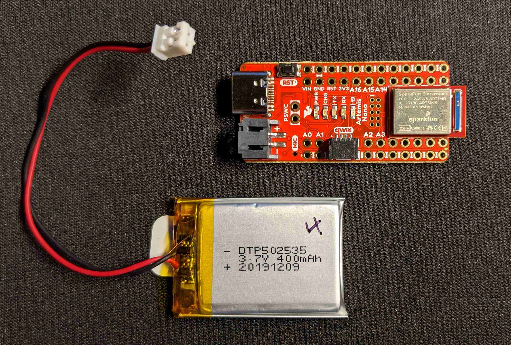
Lab 1: The Artemis Board
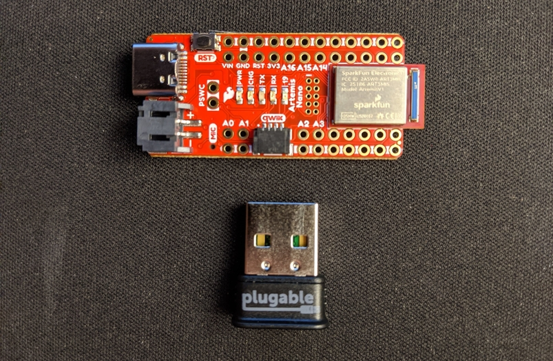
Lab 2: Bluetooth
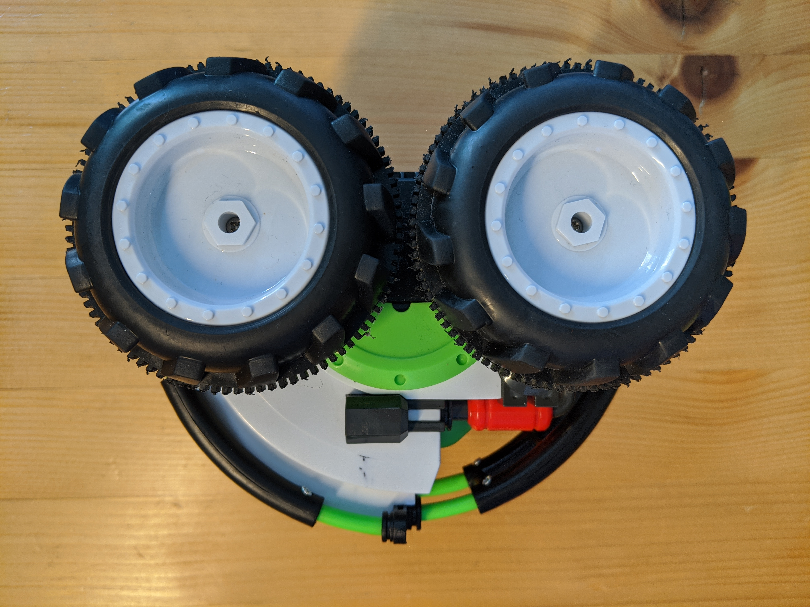
Lab 3: Characterizing Robot #4
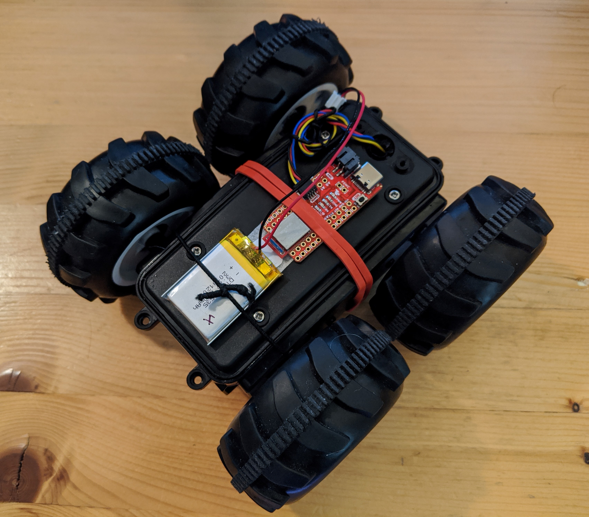
Lab 4: Open Loop Control
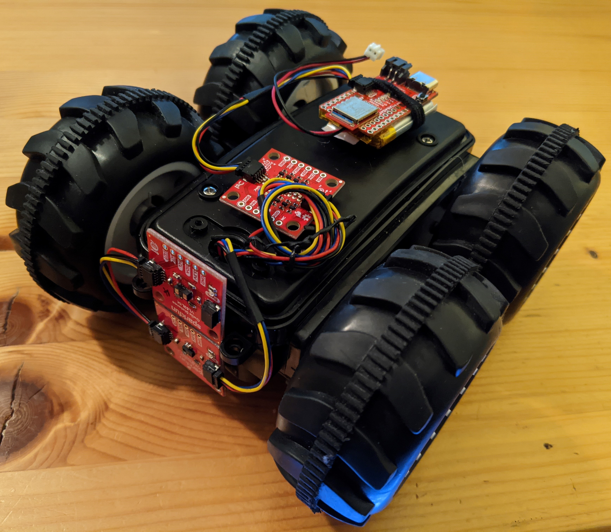
Lab 5: Obstacle Avoidance
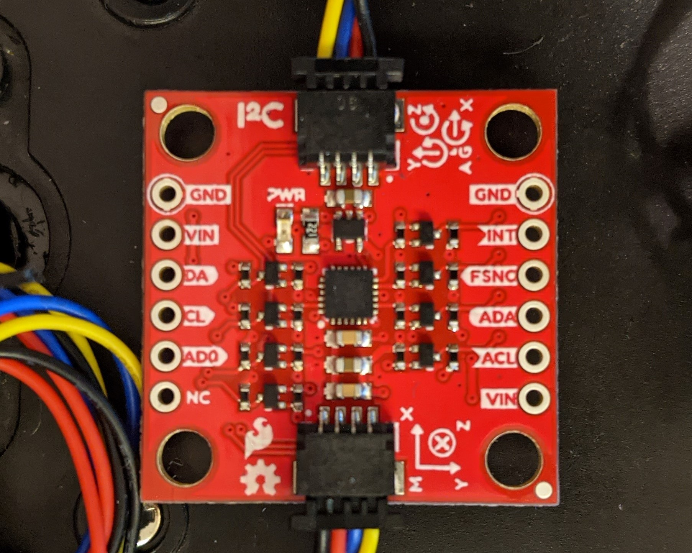
Lab 6: Inertial Measurement Unit
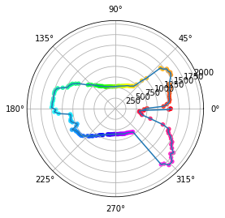
Lab 7: Mapping and Bayes Filter Prep
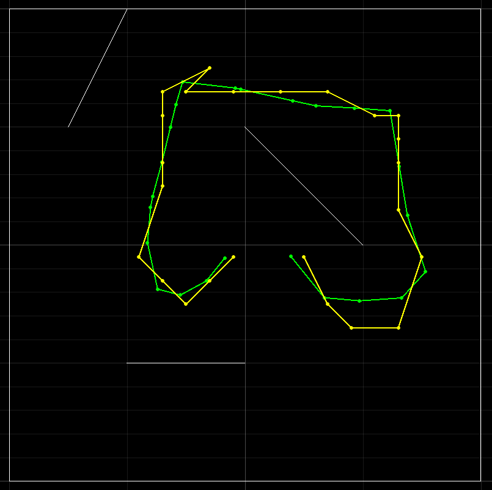
Lab 8: Grid Localization with Bayes Filter
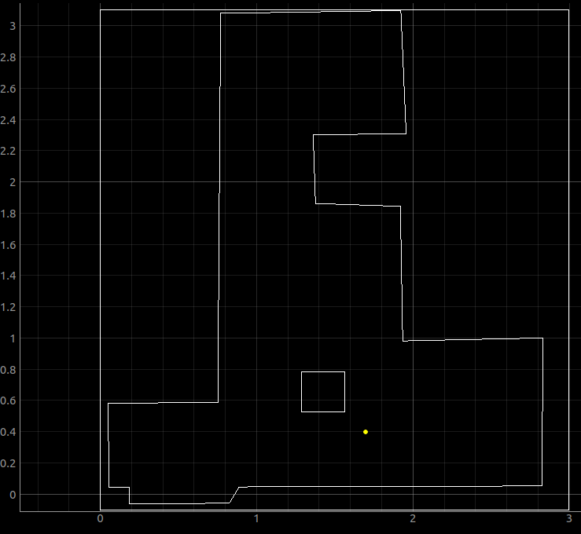
Lab 9: Online Localization
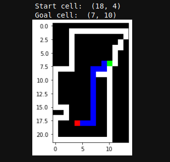
Lab 10: Path Planning and Execution
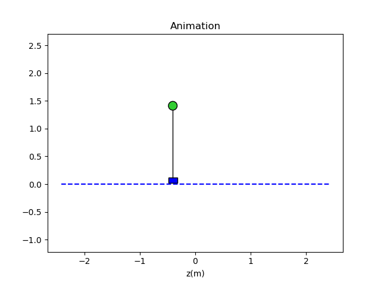
Lab 11b: Inverted Pendulum Simulation 1 (LQR)
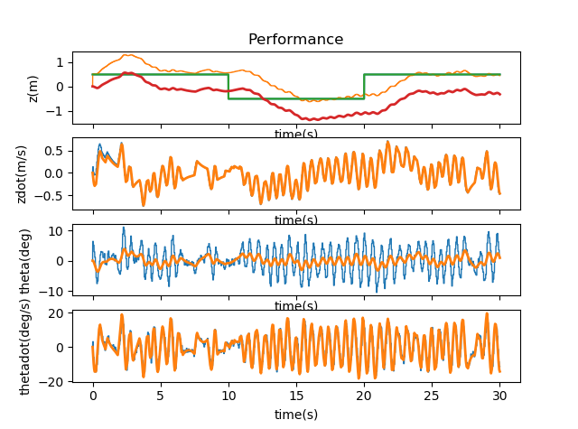
Lab 12b: Inverted Pendulum Simulation 2 (LQG)
About
ECE 4960: Fast Robots is a new class in the Electrical and Computer Engineering department at Cornell University taught by Assistant Professor Kirstin Petersen.
Gregory Kaiser is a graduate student pursuing a M.Eng. in ECE at Cornell University.
Hot Wheels of Inquiry is named for the starship called Hot Needle of Inquiry from Larry Niven's Ringworld Engineers. The Needle was used to investigate the far-away Ringworld, and had a great many autonomous systems onboard. Hot Wheels of Inquiry will explore my apartment with the same adventurous spirit as the Needle.
Lab 1 was focused on getting started with the Artemis board while testing a few of its features.
Lab 1 Report
Parts 1 & 2
These steps involved obtaining the latest version of the Arduino IDE and SparkFun's Apollo3 support pack while following the rest of
Sparkfun's setup tutorial. While this did involve some download time, it was not a labor-intensive process.
Part 3
Once everything was installed correctly, I compiled and uploaded the "Example: Blink it Up" sketch to the Artemis. To confirm that it was correctly uploading, I also changed the delay time in the sketch and made sure that the blink rate changed accordingly.
Parts 4 & 5
The sketch "Example2_Serial" confirmed that the serial port was both sending and recieving information accurately. Running "Example4_analogRead" took a bit more time, since the Artemis needed to heat up over a minute or so. To speed up this process, I held the board near a hot spot on my laptop. The temperature reading rose to about 35 degrees C, at which point I removed the board from heat and watched the temperature drop again.
Part 6
A more interesting test involved the "Example1_MicrophoneOutput" sketch where loudest frequency of sound was printed to the serial port. I whistled a few tones to test it out, and then wrote a short block of code inside the example sketch to turn on the blue debug LED on output pin 19 when a tone is heard. Below line 123, I added the following:
This additional code worked almost immediately, allowing me to run the sketch on the Artemis untethered by attaching a 3.7V LiPo battery.
Lab 1 Supercut Video:
This is a supercut of each of these milestones in order.
LAB 2: Bluetooth Connection to the Artemis
Lab 2 Goals
The walkthrough for Lab 2 guided me through connecting to the Artemis through bluetooth. In this lab the latency and quality of the connection is tested by sending and receiving a number of data packets in both directions.
Lab 2 Report
Setup
I first successfully set up the class VM, downloaded the provided bluetooth source code, and installed the bleak library. The provided Bluetooth USB Adapter is passed through to the VM by setting its visibility in the VirtualBox settings. My most reliable method for a consistent connection was to make sure that the bluetooth adapter drivers were uninstalled on my Windows machine when a connection was established through the VM.
Connect
By running main.py in the VM, a connection was established to the Artemis. The MAC address of the Artemis is displayed, so I copied that text and replaced cache: None with the appropriate address in settings.txt. Running main.py now connected more consistently to the board, and the Artemis responded with a slower blue LED flash to indicate success.
Ping
Running await theRobot.ping() pings the robot and keeps track of how long the round trip data transfer takes. When a ping is requested, the Artemis sends back a command with type PONG instead. The message being sent is a cmd_t struct, with the same data as was received. Printing the data over the Serial port, and checking the source code on line 67 of ece4960robot.py, reveals that the data being sent in a ping is a bytearray of the command number followed by 98 zeros (essentially, length=0 and the 97-byte-long data array is empty). This means the entire command sent back and forth is 99 bytes total. This is the maximum size for a cmd_t as currently structured.
I copied the output from the program (data transfer latencies) into a text file to parse in Python to measure the delay.
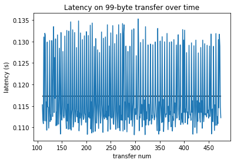
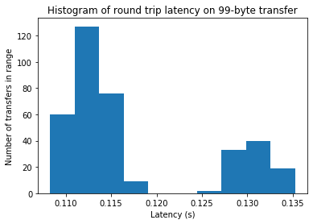
The average latency was about 0.117s and varies from a minimum of 0.108s and a maximum of 0.135s around that value. The bimodal distribution is likely due to dropped packets of data. I'm not sure how to solve this problem, and it has been a persistent issue all week.
Dividing 99 bytes by .117s gives a bit rate of approximately 6770bps, which is lower than one of the lower-bit-rate wired serial options of 9600bps.
I did write a separate python and Arduino script to ping the Artemis over a wired serial connection to test this higher data rate, but was unable to show it side-by-side with a similar data structure in time.
Float Request
Sending await theRobot.sendCommand(Commands.REQ_FLOAT) instead of the ping command asks the Artemis to send a float.
To catch this command, case: REQ_FLOAT is fleshed out in the Arduino sketch. At the top of the program, I calculated pi and stored the value in a float (float pi = 4*atan(1);) to place at the start of the data field, and cast that position to a float pointer. The size of this data transfer is therefore the size of the float, the size of the length field, and the size of the command type combined (6 bytes).
case REQ_FLOAT:
Serial.println("Going to send a float");
res_cmd->command_type = GIVE_FLOAT;
res_cmd->length = sizeof(float);
((float*)res_cmd->data)[0] = pi;
amdtpsSendData((uint8_t *)res_cmd, sizeof(float)+sizeof(uint8_t)+sizeof(cmd_type_e));
break;
Code already written in main.py unpacks this float (unpack("<f",data)) and displays pi. (output: 3.1415927410125732). This is only accurate to the 6th decimal, which makes sense considering float's limitations in general. The rest of this data is junk, and therefore comparisons of floats read in this manner must be performed more carefully to remove this extraneous/incorrect information.
Data Rate
Beginning a constant stream of data from the Artemis allows me to see how fast I can parse data being sent over bluetooth and display on-screen. I started by running theRobot.testByteStream(25) in main.py, and added the line print(unpack("<f",data)) in the case that code == Commands.BYTESTREAM_TX.
On the Arduino side, the command type was already set under the if (bytestream_active) case. To start, I simply loaded a 32-bit integer into res_cmd->data, as with the float transfer. This confirmed that the data was at least being sent and received correctly.
Expanding this to more data, I made a struct called packet which I modified to store more than just a single 32-bit number. At one point, it looked like:
struct packet{
uint32_t mils;
uint32_t count;
};
After loading data into this struct, I used memcpy((void *)res_cmd->data, (void *)ptr_eg, sizeof(packet)); to place the entire stream of data into the data field. The void pointer ptr_eg refers to a pointer to the filled packet struct of data.
Of course, this meant modifying the call to unpack() in the python code. Reference was made regularly to the formatting string documentation on python.org: "Interpret bytes as packed binary data" .
In the above case of 2 32-bit integers, 909 of 1181 packets were dropped. This is a terrible 23% success rate. I am still looking into whether or not this is some error on my end, but I am forced to report it as-is.
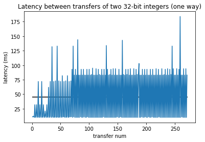
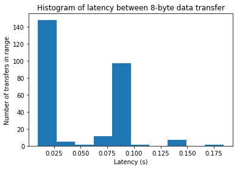
I sent a stream of 32-bit millis() counts, 64-bit micros() counts, and a 32-bit number of transfers sent (along with the 2 bytes of command metadata, in all cases). This stream only had a 26% success rate over more than 2300 attempted transfers.
I also sent a stream with five 32-bit numbers, a 32-bit transfer-count variable, and another 5 64-bit numbers, per transfer.
The data struct was:
And the parser was:unpack("<iiiiiiQQQQQ",data)
This only had a 17% success rate on transfer, unfortunately. Some results shown below:
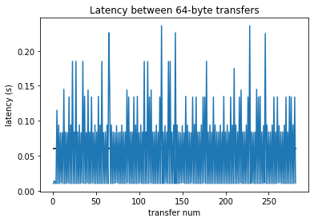
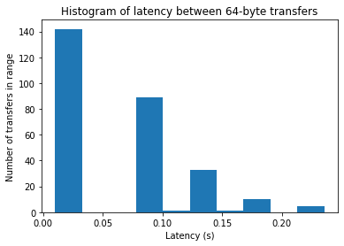
The spikes in the histogram data likely correspond to integer numbers of successively dropped packets.
Packing data and sending it over bluetooth is clearly going to be useful for this class, so I will have to put time into boosting the successful transfer rate with some tinkering in the next couple of weeks. Dropping over 70% of packets sent will be too unreliable.
Lab 2 Supercut Video:
This is a supercut of each of these steps in order, since each was short enough to combine them together.
This week the lab guide for Lab 3 was more open-ended. The goal was to produce a number of measurements that can be used to inform design decisions. Caitlin Stanton was my partner.
Lab 3 Report
Part 1: Measuring the Real Vehicle
Direct Measurements
We started with some basic dimensions. The distance between the car's wheels should be useful to determine turning radii, and the extent to which a turn and its expected rotation differ. These are both good measures once we acheive greater control over wheel speed. Other measures include the height of the battery case from the ground ("clearance") and the wheel-to-wheel width (helps determine the C-space of the car). I was also able to measure the mass of the car, the battery, and approximately all of the electronics.
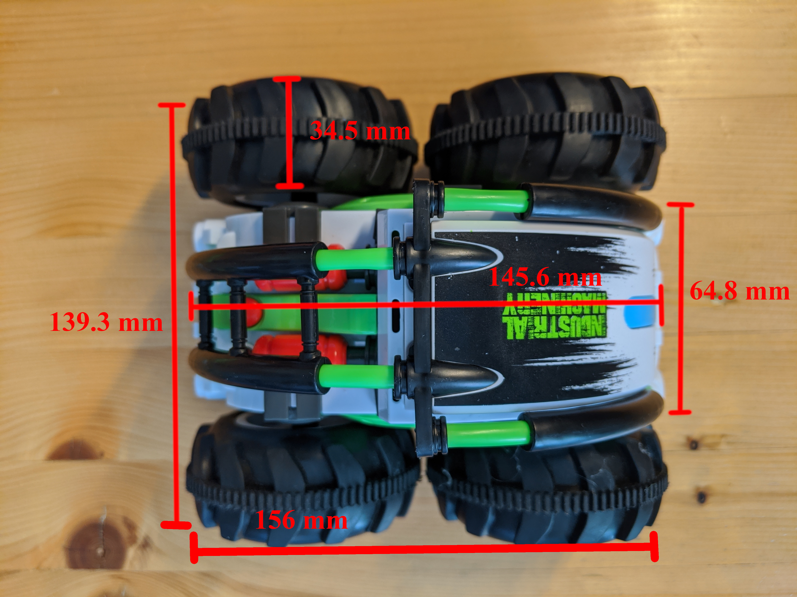
A top-view of the vehicle with some measurements superimposed.
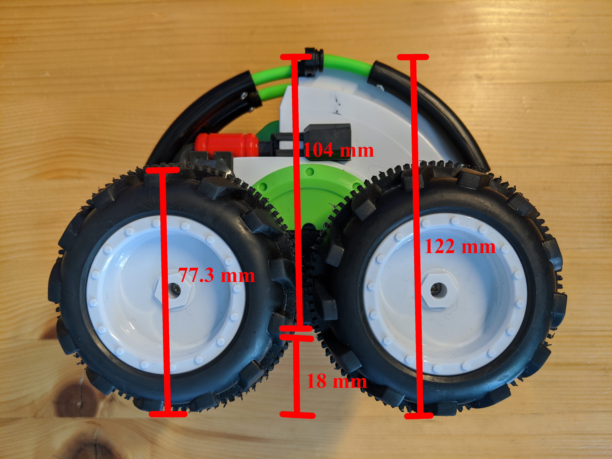
A side-view of the vehicle with some measurements superimposed.
The dimensions of a single wheel will be important for the inverted pendulum task. I am nervous about removing one of the wheels to weigh it yet, but its moment of inertia can be approximated as that of a disk. Because the wheels are geared together, they'll be spinning in the air while we balance, which may mess with our PID control loop. Even when the robot is "turtled" on its chassis, by spinning the wheels up to maximum speed and then braking (or even just by reaching max wheel speed), the robot can be kicked back into the upright position. This means that this rotational inertia is significant compared to that of the overall vehicle.
Below is a table of the direct measurements we made and compiled into a Google Sheet.
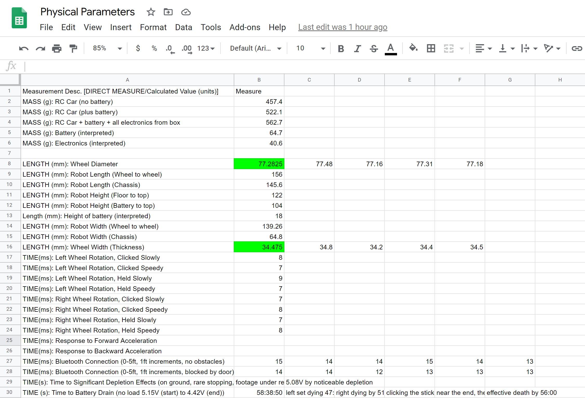
An image of our data sheet, which sorted measurements into units, with experimental tests near the end.
Battery Drain
Running the car around allowed me to see how long it lasted. Driving around on a hardwood surface (mostly turning in circles), I began to see symptoms of declining battery life around 7 minutes in, when one set of wheels began to respond intermittently. The car was still able to drive around well, but if turning in a circle it would start to drift rapidly away from the starting position when one side of the bot was slowing down faster than the other side. [On my robot, the left set of wheels always slowed faster than the right]
I also ran a "no-load" battery draining test by flipping the car upside-down in a shoe until it stopped. A fully charged battery lasted for almost an hour. Near the end, I saw that the right set of wheels was turning on and off before dying completely.
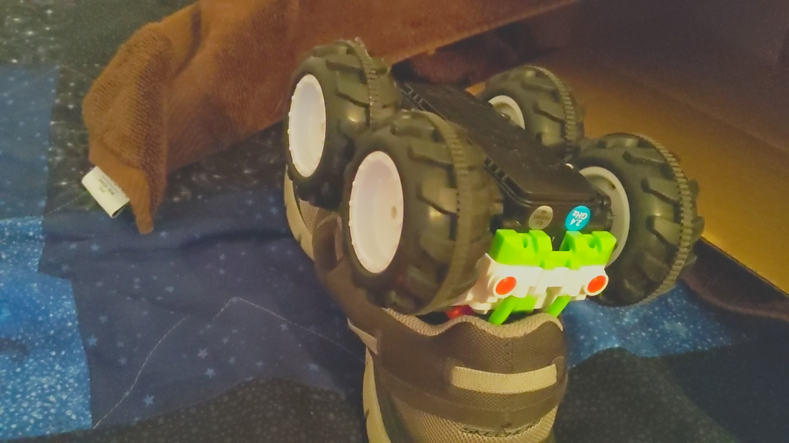
The robot in a shoe spins freely. A box and a towel were used to dampen noise, and the controller was taped in the full-forward position.
Experimental Measurements
Some obvious measures are speed and acceleration. We found that the robot has only 3 states per pair of side-wheels: off, slow, and fast. The joysticks on the remote control are a red herring, and even slight actuation causes the state to switch from off to "on", at whichever speed is chosen.
To determine speed, I set up my phone to film a wall at 240 fps, on which I placed blue tape at 10 cm increments between their right edges. Driving close to the wall allowed me to make some frame-counting measurements of speed inside a video-editing program. Note: I found that my car drifted leftward consistently.
The entire editor and image being analyzed.
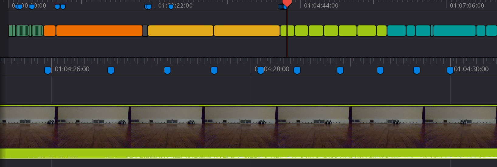
Detail on the timeline flags.
Above is the workflow that I was using for a number of trials. You can see the lower-light in the video due to the higher frame rate (240fps) chosen, and the accelerating blue flags on the timeline, which correspond to the frame where the robot crosses each distance marker.
I found that the robot on "speedy" had an average acceleration of 333 cm/s2 during its first three segments (30cm), over four trials, and speed levels off at a max of about 200 cm/s, averaged on the last 5 segments, over the same four trials. The "slowly" setting was lower, of course, with a max acceleration of 103 cm/s2 and max speed of about 107 cm/s. Only one trial was done for the slow setting.
Sanity Check: 200 cm/s is faster than a brisk walking-pace, which matches my intuition of walking around with the robot.
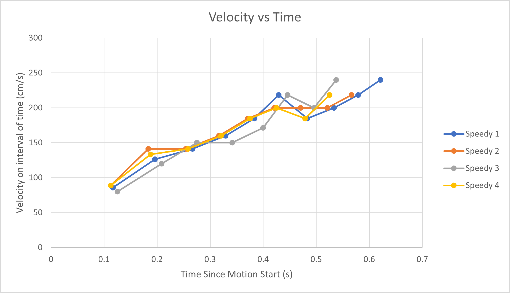
Velocity over time over four trials. Velocity was calculated with the number of frames to travel a set 10cm interval, and the number of frames was then used to calculate the time since the motion started. It is worth noting that the measurements became less realiable over time, as the robot's perspective began to change around the middle of the motion. I failed to make 100% sure that 200cm/s was the maximum speed over a longer distance.
The reliability of rotation around the robot's axis is also important. Averaging over 7 observed rotations in slow-motion, I found that the robot rotates at about 2.7 rev/s. I measured drift by taping the starting position of the car, and then rotating to determine how far the car drifts over time. This distance is calculated with a ruler, between the center of the starting position to the center of the end position. The car was unreliable when trying to spin "slowly" on hardwood, so the car was run on "speedy" for three trials: While turning clockwise, the car drifted 15.1cm over 28 s and about 13.0 cm over around 21 s. Spinning counter-clockwise, the car drifted 9.9 cm in 32 seconds, though this was the third test and the battery may have drained a bit. These three average to 0.5 cm/s. The drift is consistently rightward, and is consistently upwards for counter-clockwise and downwards for clockwise rotation. This is probably another indication that one set of wheels is stronger than the other on my robot. I did a few trials to confirm the consistency quickly, but didn't measure their distances.
The spin-drift measurement setup, at the start of a trial.The spin-drift measurement itself. In this case, the "slowly" speed was barely able to turn around, and wasn't truly spinning when it drifted to this position.
Of course, my partner Caitlin was instrumental in gathering other direct and experimental measures. On her thoroughly documented website, she tested the wheel speed and bluetooth reliability.
From my classmates, I hope to gather a few more pieces of information:
Wheel backlash/slop
Wheel mass (so that I can measure the moment of inertia)
Maximum climbable incline
Largest consistent turn-radius
Part 2: Measuring the Simulated Vehicle
After installing necessary dependencies in the VM, and performing the appropriate setup, I was able to run the lab3-manager and saw a map with a green robot awaiting my commands. Running the robot-keyboard-teleop in another terminal window allowed me to control the robot with my keyboard.
After messing around a bit to get a feel for the controls, I navigated around corners by either slowing and using the forward-turn keys ('u' and 'o'), or stopping completely ('k') and performing a dime-turn in-place ('j' and 'l'). After increasing the speed, I found out quickly that crashing causes the robot to turn into a warning symbol and stop moving. The robot needs to be "kidnapped" by clicking and dragging with the mouse to reset its position and regain control.
Using the 'q' and 'z' keys, I varied the speed of the robot. The values printed have effectively an infinite range, as far as I can tell. While you can remain completely still (speed = 0) using the 'k' key, there is almost no visual difference past about linear speed 1 and angular rate 3, maximums. Because the braking distance was effectively zero, turning around corners required careful control of speed and rotation to prevent a crash. I found the easiest way to get around curves was to head in straight lines and turn on a dime at the corner. Moving faster, however, requires turning while moving (and is a lot harder).
Lab 3 Supercut Video:
The usual supercut with some bonus footage.
LAB 4: Open Loop Control
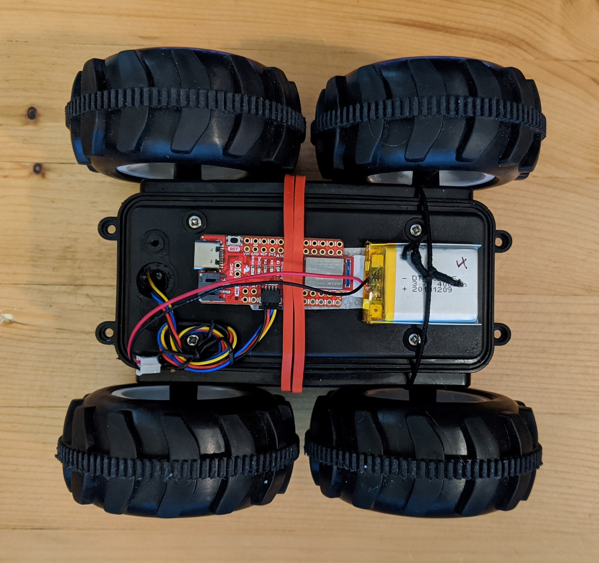
Lab 4 Goals
This week, Lab 4 asked that I acquire open loop control of Hot Wheels of Inquiry. This required me to dismantle the RC car and attach a motor controller with the Artemis board to start driving my own signals.
Lab 4 Report
Get the motor controller connected
Connecting the Serially Controlled Motor Controller (SCMD) to the Artemis, and running the "Example1_wire" sketch, I found that the I2C address of my SCMD is 0x5D. This was displayed over the serial port as the Artemis cycled through potential I2C devices. This matches the information found on Sparkfun's website .
Dismantle the car and rewire the motors
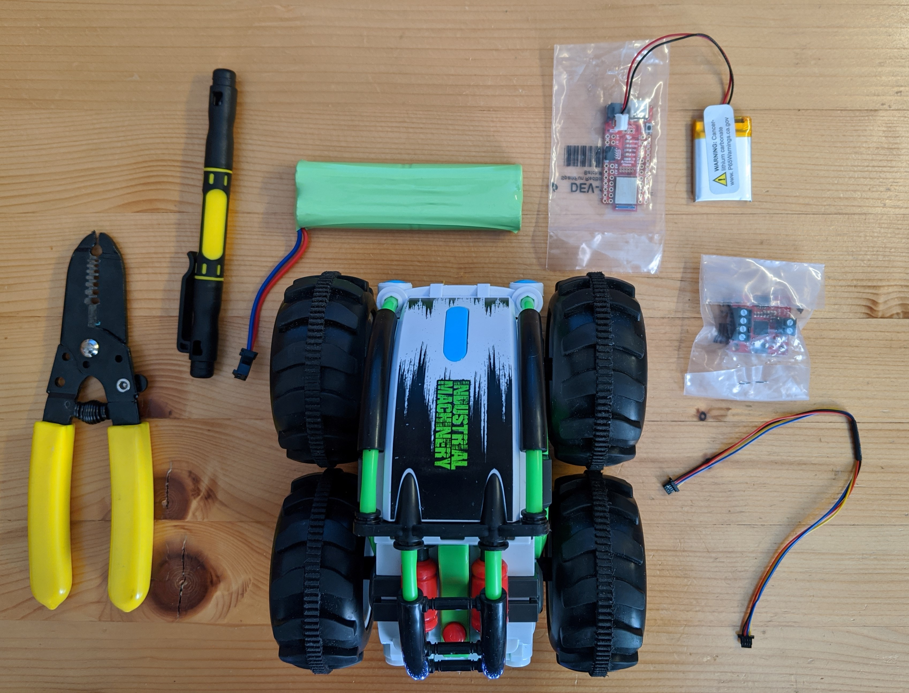
A few of the supplies I used for dismantling the robot. The pen-looking item on the left is just a screwdriver.
After taking off the roll-cage part of the car, it started to look more like a standard robot than a child's toy. Removing each piece in sequence was rather straightforward, and mounting the motor connections without needing solder made the process easier overall. Each motor was attached to two leads on the SCMD, corresponding to channel A and B.
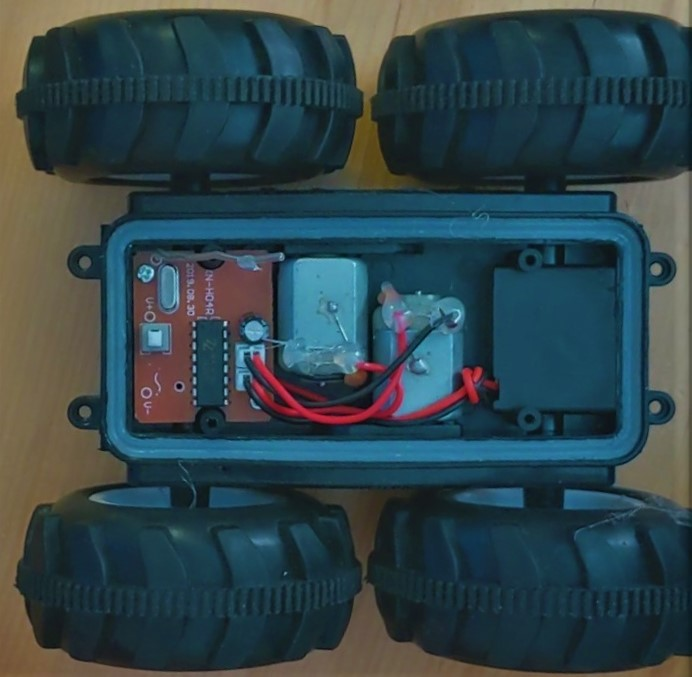
The components in the RC car when I first opened it up. The PCB shown is removed and replaced with the SCMD.
I then installed the SCMD library, and tested that the motor connections were working as expected. Simple modifications to the "MotorTest" sketch let me change the speed with which the motors were driven. I used setDrive() to change the value (range: 0-255) which I decreased until the wheels stopped turning while suspended mid-air. For both wheels, this value was around 65-70, depending on battery voltage at the time. While on the ground, static friction holds the wheels until driven significantly higher, around 110 or so, again depending on battery charge.
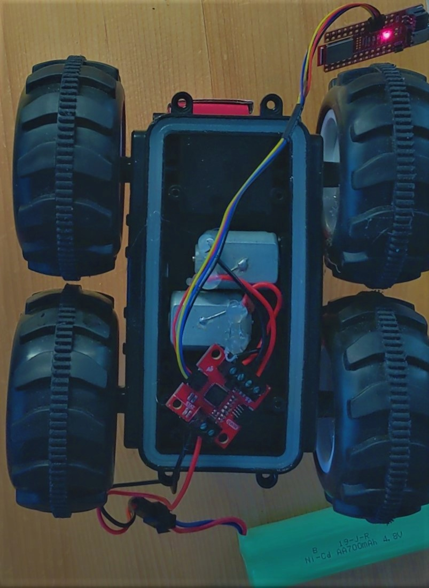
The robot after reattaching the battery and Artemis. The minimum wheel speeds were tested in this configuration.
At this point I put the robot back together. I gently pushed the SCMD closer to where the original PCB was mounted, though I was careful not to stress the motor wiring. I re-applied some hot glue on the motors where I thought it had begun to break down. The battery connector was replaced through the plastic to the battery bay. I removed the membrane and a bit of plastic from the original power button so that I could feed the Qwiic connecter through the chassis to the top of the robot where the Artemis sits.
An overhead shot after reconstructing the robot chassis, with the Artemis mounted via rubber bands.
To test the bias between the sides of the robot, I wrote a sketch that drove the left wheels faster or slower based on a single calibration factor, which gets truncated to an int:
//motor calibration factor
//to compensate for differences in robot sides
double CAL_FACTOR = 1.13;
int speed_r = 150;
int speed_l = (int) speed_r*CAL_FACTOR;
void loop()
{
delay(1000);//wait on startup
Serial.print("R: "); Serial.print(speed_r);
Serial.print("; ");Serial.print("L: ");
Serial.print(speed_l); Serial.println("");
myMotorDriver.setDrive(0,1,speed_l);//drive one side
myMotorDriver.setDrive(1,0,speed_r);//drive one side
delay(2000);
myMotorDriver.setDrive(1,1,0);//halt
myMotorDriver.setDrive(0,1,0);//halt
while(1){} //stall
}
Using a factor of 1.13 drives the left wheel at 169 while the right wheels are driven at 150. Driving for two seconds at this speed results in a mostly-straight path over several feet. While this confirms my suspicions from Lab 3 about a slower left side, I also noticed that the path of the car would jump rightward at first, and then drift left again after that first moment. This could be due to a number of sources of error in wheel response that I'm sure will be accounted for once we close our control loop.
Testing open-loop control
Once I was comfortable with the way the car behaved once rebuilt, I programmed a quick 180-degree open-loop turn:
delay(1000);//wait on startup
//drive each side for a moment
Serial.println("Now stepping through the motors.");
Serial.print("R: "); Serial.print(speed_r);
Serial.print("; ");Serial.print("L: ");
Serial.print(speed_l); Serial.println("");
myMotorDriver.setDrive(0,0,speed_l);//forward
myMotorDriver.setDrive(1,1,speed_r);
delay(1500);
myMotorDriver.setDrive(1,1,0);//halt
myMotorDriver.setDrive(0,1,0);//halt
delay(2000);
myMotorDriver.setDrive(0,1,speed_l);//turn
myMotorDriver.setDrive(1,1,speed_r);
delay(600);
myMotorDriver.setDrive(1,1,0);//halt
myMotorDriver.setDrive(0,1,0);//halt
delay(2000);
myMotorDriver.setDrive(0,0,speed_l);//forward
myMotorDriver.setDrive(1,1,speed_r);
delay(1500);
myMotorDriver.setDrive(1,1,0);//halt
myMotorDriver.setDrive(0,1,0);//halt
while(1){}
I was also able to combine the sketch from Lab 1, which detected the loudest frequency from the microphone, with the motor driving code. I binned frequencies between 600-900 Hz as "turn" frequencies, and between 900-1100 Hz as "forward" frequencies. This let me turn and drive the car with just two notes. The binning was necessary because, on my first pass, I let the noise from the motors trigger the car to continue moving. I used a frequency analyzer app on my phone, and the output from the Artemis, to choose an appropriate cutoff of around 1300 Hz, and then tuned down empirically from there. Nestled inside the PDM example code (along with the motor driver setup), I placed the following:
This program worked better than I expected, and got me excited to start using sensor data to drive the robot.
Video demonstrations of straight-line-following, turning, and whistle control can be found in the supercut video at the end of this lab.
Simulation Control
Setup for the virtual lab was similar to the previous lab, and I took care to perform the order of operations as specified. Once the jupyter lab notebook was running, it was easy enough to control the simulated robot.
I designed my one-time script to run straight for a regular interval, and then turn at 3 rad/s for one second, and then repeat until the square was closed. This turn speed was well over the limit of the robot, since turning at about pi rad/s for a second should have resulted in a 180-degree turn, instead of a 90-degree turn. This further confirms that there is a limit on rotation rate, as observed in Lab 3.
Footage of the open-loop rectangle can be found at 0:16 in the supercut video below.
Lab 4 Supercut Video:
The usual supercut of each task.
LAB 5: Obstacle Avoidance
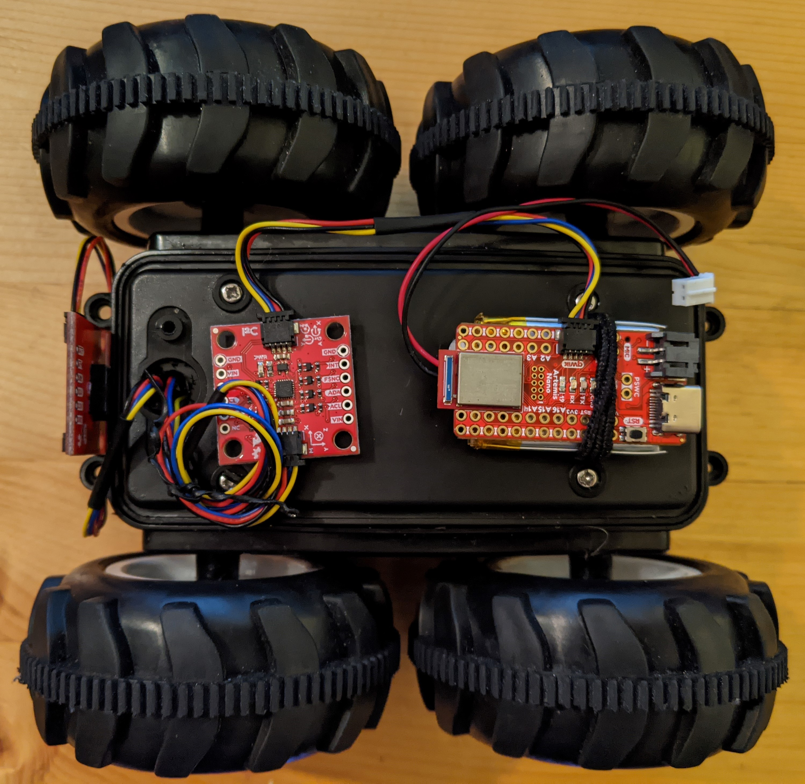
Lab 5 Goals and Prelab
This week, Lab 5 required that we test our time-of-flight (ToF) and proximity sensors, and then implement simple obstacle-avoidance on our robots. Based on the datasheet for each of these sensors, the proximity sensor has a range of 0-200 mm, where the ToF sensor has a range of up to 4 m with a 27 degree field-of-view. My instinct is to mount both sensors to the front of the robot, use the ToF sensor for longer distances, while using the proximity sensor for short-range obstacle-detection. Of course, this would mean that the robot is insensitive to the angle-of-approach, and will hit a wall if attacking at a shallow angle. Walls and obstacles that exist between the wheel and sensor will stall/impact the robot and knock it off-course. Also, while rotating or moving backwards, it will be impossible for the robot to detect an obstacle.
Many kinds of distance sensors exist, including ultrasonic, LiDAR, and LED sensors as well as the IR-based proximity and IR laser ToF sensors on this robot. It makes sense to use light-based sensors for this application, assuming that I can keep the lighting in my testing-environments relatively stable. Ultrasonic sensors are likely too bulky and sensitive to environmental variables. LED sensors are a great, cheap option for slower-moving robots, and LIDAR is likely too-long-range and high-current-draw. Sparkfun has a great information page synthesizing a few of these points, and a larger sheet of comparisons as well.
If I could, I would use lower-sensitivity, shorter-range LED sensors as wall detectors pointed perpendicular to my direction of motion. This would inform turn-decisions for my robot. This is very similar to the way distance sensors were used in ECE 3400: Intelligent Physical Systems.
Lab 5 Report
Sensor Testing
I started by finding the address of each sensor. It is necessary to download the Sparkfun libraries using the Arduino library manager prior to gathering data. For the VCNL Proximity Sensor , the default address of 0x60 was found, which matches its datasheet. The VL53L1X Time-of-Flight sensor has a default address of 0x29, which matches the Sparkfun information page. Notably, the I2C address listed on the VL53L1X datasheet was 0x52 by default. My assumption is that the Sparkfun-packaged board changes this to the default 0x29.
Proximity Sensor
To test the proximity sensor I set up a short-range test on my desk. Since the coordinate grid paper disagreed with my ruler by about 10%, I drew my own grid. I modified the "Example4_AllReadings" script into a custom test script which printed 50 readings upon a character request from the Serial port. Using a pink folder, with the lights on and off, and also a metal can, I collected sensor data.
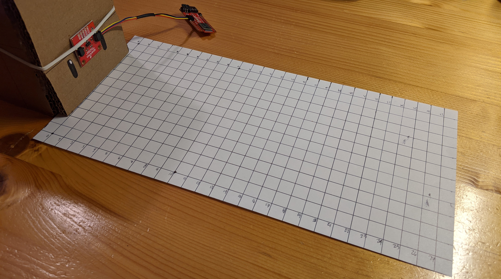
The setup I used for testing the proximity sensor over 28 cm.
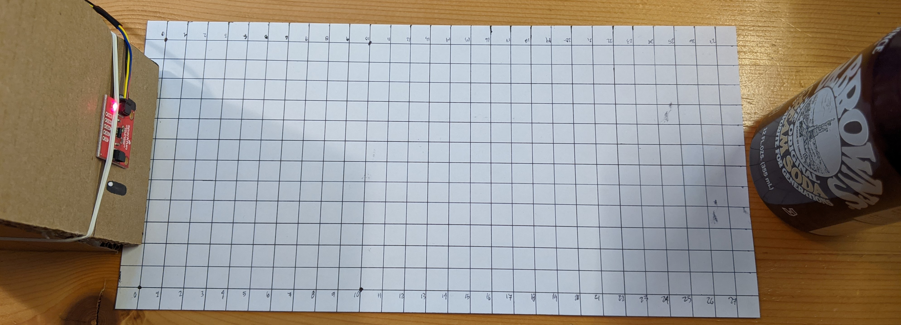
I aligned the soda can with the center of the sensor and moved it closer 1 cm at a time.
I tested the soda can, because I figured that maybe the cylinder of aluminum would reflect the IR light, and bounce it away from the sensor, messing with the distance readings.
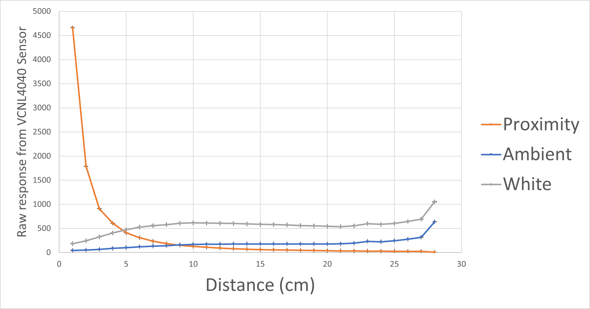
The proximity sensor response average over 50 measurements, with standard deviation, measured on short range with the lights on.The proximity sensor response average over 50 measurements, with standard deviation, measured on short range with the lights off.
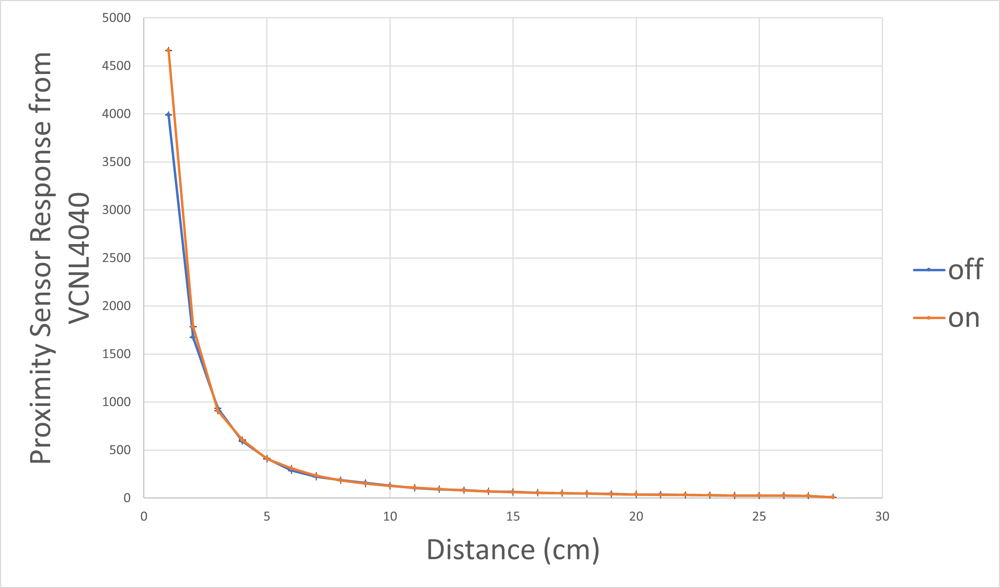
The proximity sensor response with lights on/off averaged over 50 measurements with standard deviation. While the ambient and white light sensor readings obviously drop off, the IR-based distance readings look almost identical under different (notably artificial) lighting conditions.
Testing the folder, angled folder, and soda can, the shape near the elbow is object-dependent.
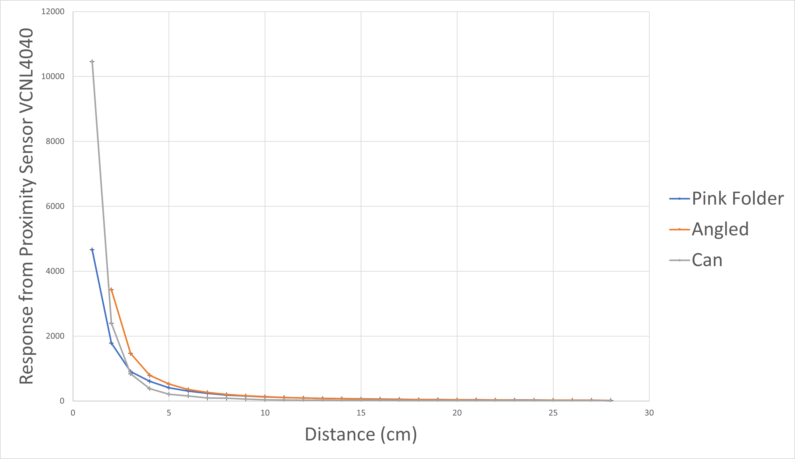
The proximity sensor response average over 50 points with standard deviation, measured on short range with the lights on using a paper folder held perpendicularly, at a 45 degree angle, and using a soda can.
The default testing program had a very delayed response time to obstacles of about 4 seconds. However, timing the isolated information request with micros() revealed a delay of only 0.63 ms for any of the sensor readings, independent of environmental conditions.
Time-Of-Flight Sensor
To test the ToF sensor, I started with the same setup as the proximity sensor, to see to what extent they differ on that short range. Because the readings are more precise on the ToF sensor, I used the grey target provided to us to calibrate the 140 mm reading in the sensor's memory. The "Example7_Calibration" sketch required modifications to get it to work correctly (I had to add the line distanceSensor.startRanging(); around line 92). White cardboard and a shiny pink folder had no difference in ToF reading.
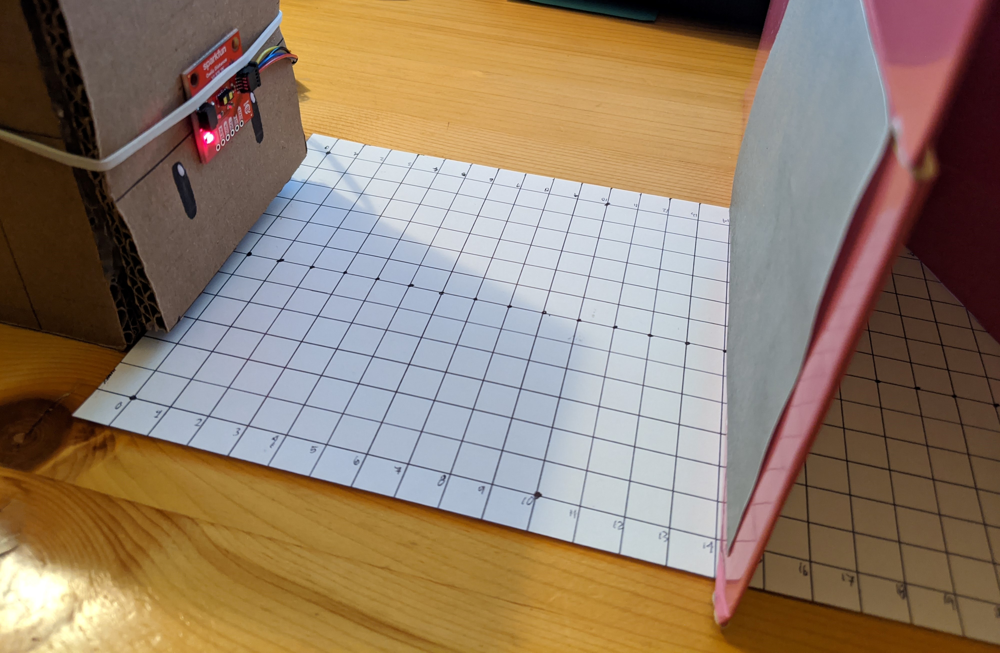
Calibrating the ToF sensor with a grey target.
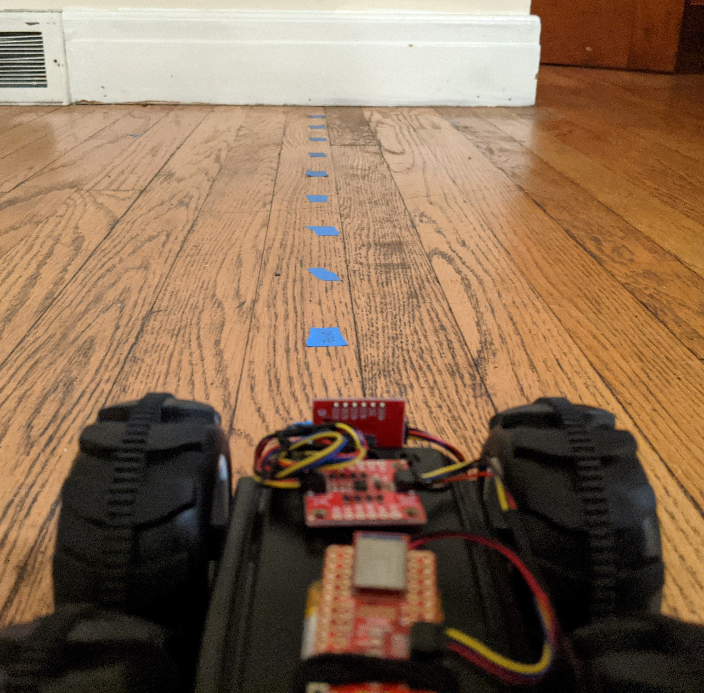
While not precisely the setup I used, this is the spirit of the long-distance ToF sensor testing. In reality the tape pieces extended about 4 m away from the wall.
To speed up the measurement rate, one can modify the inter-measurement period (IMP), and the timing budget, for a given application. The minimum budget is 20ms, and by setting the IMP below this number, measurements are made repeatedly as fast as possible, according to the user manual. One can also modify the operating range: 1.3m, 3m, and the full 4m range. For the relatively small distances around the floor of my apartment between obstacles, I went with the shorter-range 1.3m setting for obstacle avoidance.
Given a max robot speed of about 200cm/s, and a ToF reading every 20ms, I get a sensor reading every 4 mm of travel. I opted for this fastest-reads option for now.
Using the "Example3_StatusAndRate" sketch, I found that rapidly approaching the sensor leads to a failure mode called "Wrapped target fail". This also occurred when I placed my hand in the beam of the sensor suddenly. These errors were quite rare, but it means that rapidly approaching an obstacle might cause the sensor to become less reliable, incentivising my use of multiple sensors for obstacle detection. The signal rate went up when the object moved towards the sensor, and sharply down when moving away. Slow-speed measures at long-distance should work well enough to stop a crash.
I tested the long-range of the ToF sensor after mounting to the robot. Using micros(), the read time from ranging start to finish was about 20 ms, which was set by the timing budget, though the request itself only takes 0.73 ms when the IMP is less than the budget (rapid-reads).
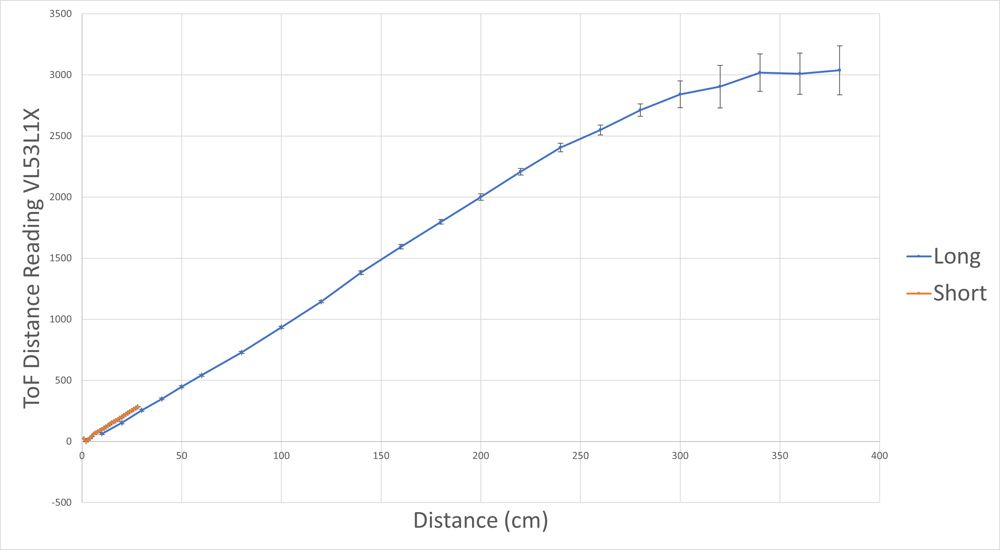
The ToF sensor response average over 50 measurements with standard deviation over long and short distances. Using the long-range mode, the ToF sensor has roughly accurate linear readings of distance in mm, but trends away from accuracy as the limit of the sensor is reached. The orange line is the short distance test, detail below.
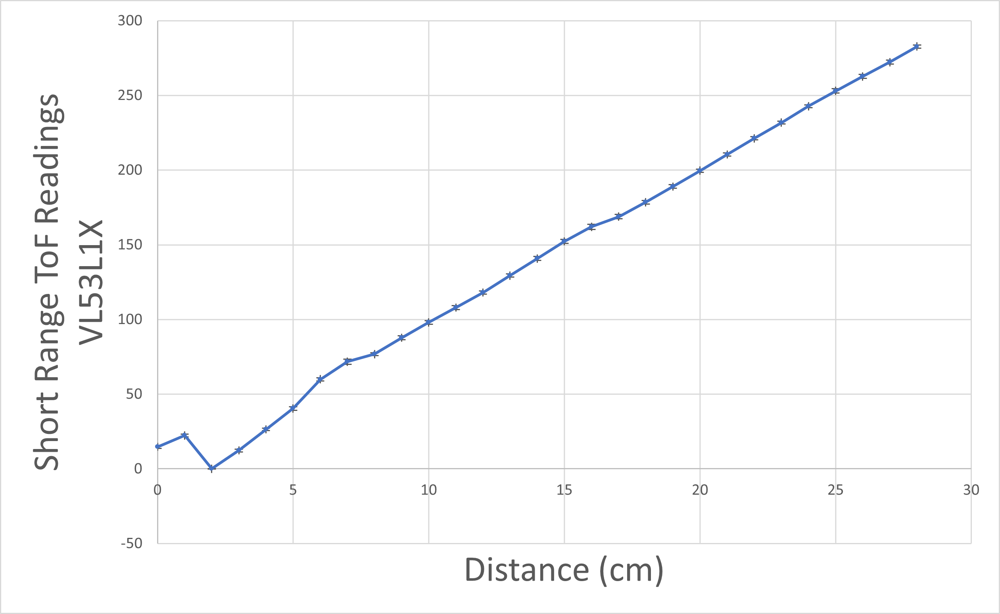
The ToF sensor response average over 50 measurements with standard deviation, measured on the same range as the proximity sensor. It shows more instability for very-nearby objects than the proximity sensor, but behaves much better past several cm, and presumably onward through over a meter.
The sensor seems insensitive to texture/color based on the number of walls and objects whose range it could detect.
Robot Mounting
Using the double-sided foam pieces, cut to small sizes, I mounted the IMU, ToF sensor, proximity sensor, and the Artemis board to the robot chassis. I mounted my sensors vertically along the center axis of the vehicle. Daisy-chaining the sensors together allowed them all equal access to the Artemis, though some cable-management might have to be improved in the future.
My sensor arrangement for this lab. The through-holes for the original roll-cage could be exploited for a 3D-printed bracket.
Obstacle Avoidance
I started with a simple threshold for the proximity sensor to stop the robot. This worked okay at low-speed, but the robot drifted into obstacles often. Switching to the ToF sensor readings alone proved much more sensitive to obstacles.
To prevent the drifting issue at high speeds, I created an active braking function called hardstop() which drives the wheels in reverse for 200 ms at whatever speed they were previously being driven. This halts the robot much more suddenly, and has the added benefit of causing the robot to backup just a bit if it detects a wall while stationary. This gives some distance for the robot to continue its random-motion path.
void hardstop(){
myMotorDriver.setDrive(0,1,speed_l);//reverse for a touch
myMotorDriver.setDrive(1,0,speed_r);
delay(200);
myMotorDriver.setDrive(0,0,0);
myMotorDriver.setDrive(1,0,0);
}
Once a wall is detected with either sensor, I programmed the robot to turn for a random amount of time between 350 and 900 ms. I chose these values to empirically appear to turn the robot between 90 and 270 degrees, turning it away from the obstacle that stopped it in the first place.
if(dist<250){//WALL! STOP
hardstop();
delay(1000);
myMotorDriver.setDrive(0,1,180);/turn
myMotorDriver.setDrive(1,1,160);
delay((int)random(350,900));
hardstop();
delay(1000);
myMotorDriver.setDrive(0,0,speed_l);//drive one side - LEFT
myMotorDriver.setDrive(1,1,speed_r);//drive one side - RIGHT
}
The last algorithm I tried was aimed at stopping at a wall, without flipping, after being at maximum speed for some amount of time on-approach. During robot testing in Lab 3, I found that the best hard-braking I could accomplish used the "slowly" setting to quickly ramp speed down close to the wall, and then hard-reversing to halt in place. To create this same effect, I created four speed ranges for the robot depending on its distance to a wall. Over a meter away, the bot goes at full speed. Each bracket under 1000 mm, 750 mm, 500 mm corresponds to a drop in speed, and finally the robot will stop at <250 mm.
if(dist>750&&dist<=1000){//wall incoming! slow it down
speed_l = 160;
speed_r = (int) speed_l*CAL_FACTOR;
myMotorDriver.setDrive(0,0,speed_l);//drive one side - LEFT
myMotorDriver.setDrive(1,1,speed_r);//drive one side - RIGHT
bracket=1;
}
else if(dist>500&&dist<=750){//wall closing! slow it down
speed_l = 120;
speed_r = (int) speed_l*CAL_FACTOR;
myMotorDriver.setDrive(0,0,speed_l);//drive one side - LEFT
myMotorDriver.setDrive(1,1,speed_r);//drive one side - RIGHT
bracket = 2;
}
else if(dist>250&&dist<=500){//wall closing! slow it down
speed_l = 75;
speed_r = (int) speed_l*CAL_FACTOR;
myMotorDriver.setDrive(0,0,speed_l);//drive one side - LEFT
myMotorDriver.setDrive(1,1,speed_r);//drive one side - RIGHT
bracket = 3;
}
else if(dist<=250){//WALL! STOP
hardstop();
delay(3000);
}
else {
speed_l = 220;
speed_r = (int) speed_l*CAL_FACTOR;
myMotorDriver.setDrive(0,0,speed_l);//drive one side - LEFT
myMotorDriver.setDrive(1,1,speed_r);//drive one side - RIGHT
bracket = 0;
}
Each of these crude polling methods worked fairly well, and active braking is especially fun to see when the car almost flips over to stop short. However, it still doesn't prevent 100% of crashes. When turning, the robot sometimes spins or reverses into a wall, where there are no sensors. A common failure mode is not noticing a wall approaching from a shallow angle. Correcting for this merely by increasing the distance threshold would make the robot much too sensitive to obstacles when approaching head-on. See the Supercut below for videos of a number of obstacle-avoiding examples.
Simulation Obstacle Avoidance
Inside the simulation, I tried to set up a similar algorithm to the actual robot implementation. Upon repeated reads, if the distance sensor sees a low value, the robot will stop and turn a random amount to continue moving. This algorithm suffers the same drawbacks as the physical version, namely that shallow angles will still cause crashes, and rotation too close to a wall will also cause a crash. I can mitigate this by increasing the distance threshold so that rotation occurs farther away. Another method might be to simply reverse backwards for some short amount of time before turning. The vehicle also clips walls because the sensor beam is narrow near its body. Taking a short angular sweep every now and again might prevent this issue, though I didn't get around to testing such an algorithm.
def perform_obstacle_avoidance(robot):
dist = 0
#start rollin
ti = time.time() #used for timing the velocity command
robot.set_vel(1,0)
tf = time.time()
print(tf-ti)
while True:
# Obstacle avoidance code goes here
#get distance
dist = robot.get_laser_data()
if dist<.6:#wall! stop and/or turn
robot.set_vel(0,0)
turn_dir = random.random()
if turn_dir>.5:
robot.set_vel(0,3)
else:
robot.set_vel(0,-3)
time.sleep(1+2*random.random()) #turn between 90 and 270 degrees
robot.set_vel(1,0)
time.sleep(0.1)
perform_obstacle_avoidance(robot)
Timing the velocity command, I found it to be almost instantaneous around .0003 to .0004 seconds in the jupyter notebook, and can send essentially perfect stops. However, when attempting to take a 10-point sliding average, the memory manipulation takes too long and causes a number of crashes that wouldn't otherwise occur with raw, noisy readings.
Going as fast as possible, the robot manages to stop with raw reads of 0.4 m. Anything under this causes consistent crashing. Examples of avoidance running in the sim can be found at about 02:56 in the supercut video below.
Conclusions
In order to make this system more robust, I think that separating the sensors across the width of the robot could help. Apart from simply being able to sense obstacles before the wheels make impact, an angle of approach might be roughly calculable based on the difference in reading.
The sensitivity of the proximity sensor to ambient light can be controlled through testing conditions, and its unreliability and non-linear mapping to distance compared to the ToF sensor may be outweighed by its overall higher-frequency response (if you take into account the 20 ms ToF budget compared with the 0.6 ms proximity sensor read). I will have to carefully consider whether it is best used as a paired front-facing camera, or as a rear reverse camera to assist with turns/reversing.
Lab5 Video Supercut
The usual supercut. Coverage is rougher than usual.
LAB 6: Inertial Measurement Unit
Lab 6 Goals
This week, Lab 6 was centered around enabling Hot Wheels of Inquiry to determine its orientation using an Inertial Measurement Unit (IMU). I increased the reliability of these measures, and implemented a controlled rotation of the robot.
Lab 6 Report
Setup IMU
The IMU address matches what is listed on Sparkfun , and on the datasheet (page 14, Ad0=1): 0x69. If the board is aligned flat against a surface either on its face or on an edge, the accelerometer reads about 1000 in one axis, corresponding to 1000 milli-g's or 1g of acceleration on Earth. This vector sweeps through the other axes while maintaining its magnitude, if swept slowly. On the gyroscope, rotation rates in degrees-per-second hover below 4-5 dps in magnitude. While isolated from obstacles, the magnetometer channel reads the Earth's magnetic field around several 10s of microteslas, which is about right. On the robot, however, the magnet motors throw this reading off into the hundreds of microtesla range.
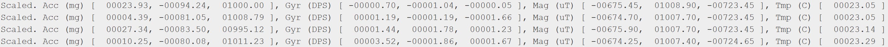
Output of the IMU from the Basics example script. The magnetometer is reading high values because the IMU is mounted to the robot's surface.
I used SerialPlot to gather data from the IMU.
Accelerometer
Starting with "Example2_Advanced", I modified data reads to store raw acceleration data in floats: ax, ay, az. Pitch and roll are calculated as below, and are filtered:
where ALPHA_P_A and ALPHA_R_A are 0.45. Holding the sensor up to a vertical object on my table allowed me to check that both read about +/-90 degrees at their maximum extent. I therefore did not need to perform a two-point calibration.
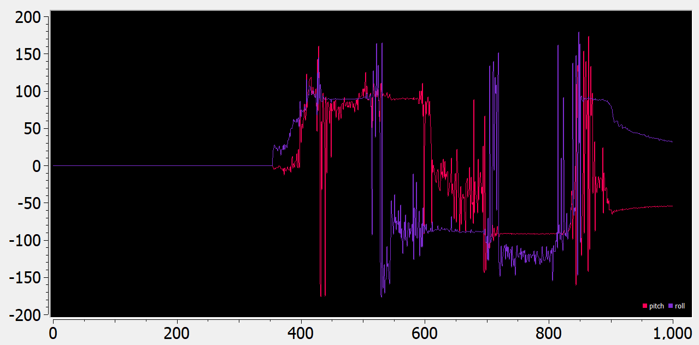
Unfiltered values from the accelerometer after calculating pitch and roll, brought to their maximum extent. Because arctan spikes when az gets low, the readings get very noisy/wrap around pi/2.
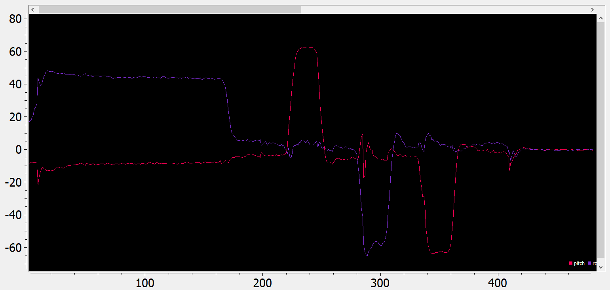
After applying a low-pass filter to these values, they become cleaner. This experiment did not swing either pitch nor roll to its full +/- 90 extent.
Tapping the sensor while reading data every 30ms produced the following plot and Fourier transform, performed in a jupyter notebook.
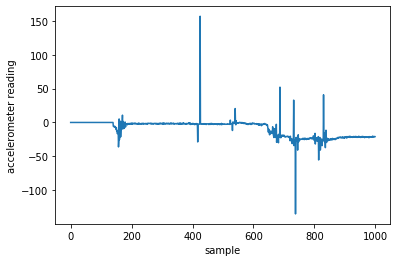
The time domain signal of several taps on the accelerometer, pitch calculation.
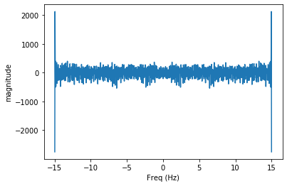
The Fourier transform of the signal, with the zero-bucket (DC component) removed.
I believe this spike in the frequency plot corresponds to jumps in the data between three adjacent points, which is the highest frequency noise that can be observed while sampling (sampling frequency/2, so approximately 15Hz). I therefore set a starting point for my complimentary low-pass filter at alpha = 0.65, based on a cutoff of 10Hz. As the cutoff frequency is decreased, the accelerometer is listened to/trusted less, and therefore readings will begin to lag reality (cannot keep up with a rapidly-changing signal).
Gyroscope
I expanded the readings to store raw gyroscope data in gx, gy, and gz, and used equations from class to integrate values of pitch and roll:
where sample was my sample loop delay in milliseconds. Adjusting this value didn't have a huge affect on output, but drift in gyroscope readings seemed to increase.
The pitch roll and yaw calculations from the gyroscope, while rotating around. The output drifted very quickly from the original zero point.
Qualitatively, accelerometer readings were very noisy compared to the gyroscope, but were much more stable long-term:
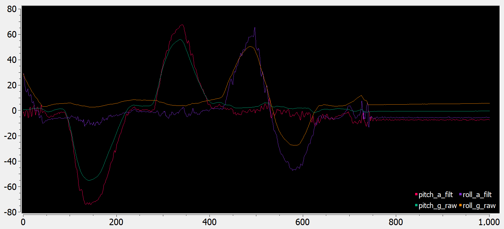
Comparison of the filtered accelerometer (red and purple) data with gyroscope raw readings (green and yellow). The accelerometer is much noisier than the gyroscope, but the gyro starts to drift despite being brought back to the zero position.
Combining the gyroscope's lack of noise on the short-term, and the accelerometer's long-term accuracy, a complimentary filter is used to generate drift-resistant, low-noise estimates of pitch and roll:
where ALPHA_P_G and ALPHA_R_G were adjusted down to about 0.15. The accelerometer dominates the long-term signal while the gyroscope handles small perturbations:
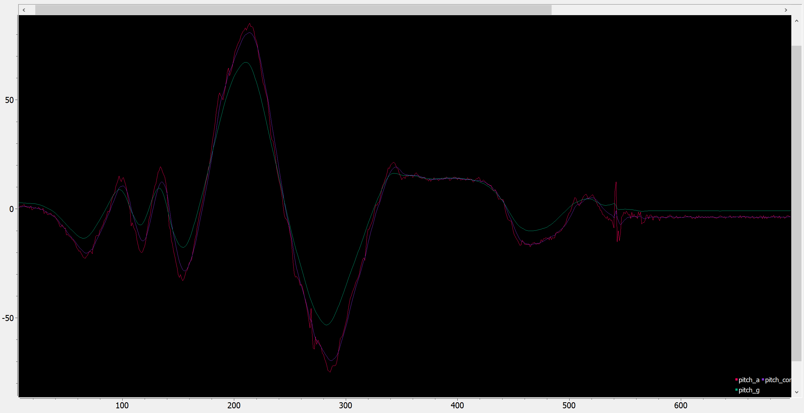
The complimentary filter (purple) is much smoother than the accelerometer readings (red), but doesn't drift like the gyroscope (green) once returned to the starting position.
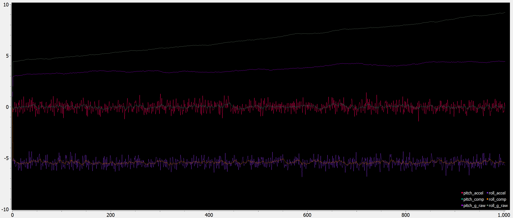
My apologies for the confusing color scheme/numerous signals. This example is merely to show that the two readings drifting away at the top are the gyroscope's drift, while the complimentary filter stays anchored to the much more jagged and noisy accelerometer readings which hold steady on average.
Magnetometer
The magnetometer was quite difficult to use, and its output was hard to handle usefully (stored raw values in mx, my, and mz). While the IMU is isolated, readings are okay, and a measure of yaw is found by projecting the magnetic field onto the x-y plane of the robot. This gives a heading relative to North, and is calculated using equations given/derived in class:
Keeping the IMU flat on the table, the point where the y-direction on the IMU is perpendicular to North causes the yaw calculation to drop to zero. This is how I identified North in my room, verified by a smartphone app. When pointed South, the reading will flip back and forth between the maximum and minimum value. My output was not very robust to changes in pitch, but I spent a good amount of time trying other versions of the yaw projection math. No matter what I tried, tilting the IMU above a small angle caused the reading to drastically change. I decided to forego two-point calibration in favor of a pure-gyroscope yaw estimate.
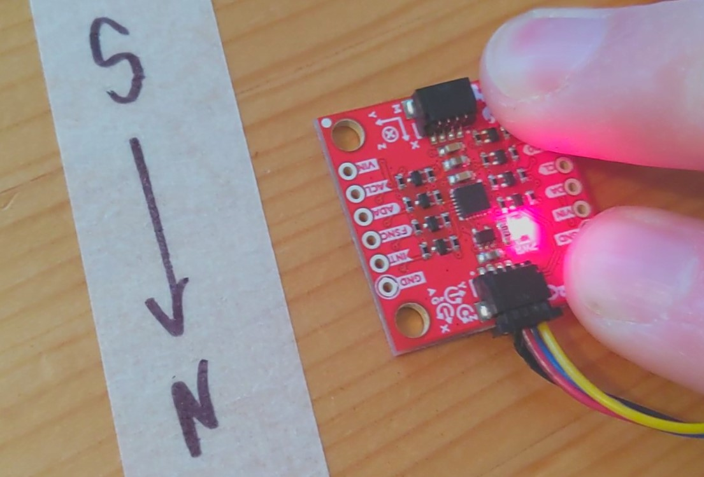
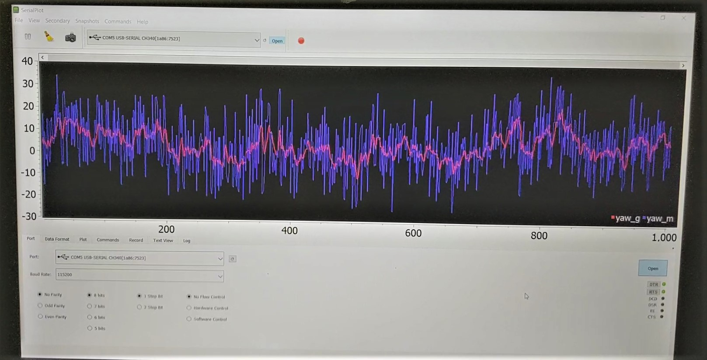
The magnetometer didn't consistently hold steady at zero, but was close enough to identify North and match it to my cell phone application. See 1:15 in the supercut video for direct observation.
Start Calibration
Because the drift in the gyroscope readings is relatively consistent, I was able to eliminate some of it by reading 1000 times every time the Artemis is restarted. Assuming that the robot is static, and averaging these readings, drift in the gyroscope is lowered so that yaw can be read directly from the gyroscope.
Implementing a complimentary filter with the gyroscope and magnetometer, similar to the pitch and roll readings, proved impossible, or else very unreliable. Using only the gyroscope, along with this offset, generated more consistent measures.
No offset (red) drifted faster than with calibrated offset (purple).
Open Loop Observations
1: Ramp Experiment
After spending quite a bit of time getting the bluetooth connection to work with my Windows machine (I dropped 70% of packets in Lab 2, so I figured this might help), I modified main.py to send a SER.RX command as a request to the robot once a connection is established (await theRobot.sendCommand(Commands.SER_RX)). In the Arduino script, this triggers a gate to open, starting the ramping experiment:
case SER_RX:
Serial.println("Got a serial message");
pushMessage((char *)&cmd->data, cmd->length);
//got command to start rotation test
rotate_test = 1;
break;
The robot sweeps through all 255 motor output values in increasing and then decreasing order. An integer keeps track of the number of samples (or cycles) that are performed for every change in motor speed (set to 3):
if(rotate_test){
//read data
read_data();
samples_so_far++;
//gated motor speed change, ramp up
if(ramp_up && motor_apply<256 && ((samples_so_far%samples_per_change)==0)){
myMotorDriver.setDrive(0,1,motor_apply);//spin
myMotorDriver.setDrive(1,1,motor_apply);
motor_apply++;
if (motor_apply==256){
ramp_up = 0;
motor_apply = 255;
}
}
//ramp down
else if(!ramp_up && motor_apply>=0 && ((samples_so_far%samples_per_change)==0)){
myMotorDriver.setDrive(0,1,motor_apply);//spin
myMotorDriver.setDrive(1,1,motor_apply);
motor_apply--;
if (motor_apply==0){
myMotorDriver.setDrive(0,1,0);//stop
myMotorDriver.setDrive(1,1,0);
while(1){}
}
}
}
To keep the sample time constant, the delay is adjusted for cycles which require motor speed changes:
time_now = millis();
delay(sample-(time_now-time_start));//delay for the remaining sample time
A packet of data is sent each cycle. This started as pitch, roll, and yaw, but ended with the raw gyroscope reading in z as a float, along with the motor signal for that cycle in a uint32_t called motor_sig. It is decoded on the computer side with unpack(<fI, data).
Despite running on hardwood, the robot jitters quite a lot while spinning. The yaw estimate accumulates angle as expected, and the gyroscope reading shows the large deadband on either side, as well as the fact that one side starts rotating before the other. There is also significant hysteresis, since the deadbands on either side have different cutoffs, and there is less of a one-wheel phenomenon when the robot is stopping.
The z-axis gyroscope reading across this ramp test showed a limited "linear" range between motor signal above 210 (rising) and above 170 (falling). See 1:32 in the Lab 6 Supercut for a demonstration. An estimate of yaw across a similar test run shows the robot continuing to rotate in a single direction, since my gyroscope readings are not clamped between 0 and 360 degrees for this experiment.
2: Minimum Rotation Signal
I ran the robot with a constant motor signal to see how slow I could go. Unfortunately, because of the huge amount of jitter on hardwood, The rotation was either very high, giving a very noisy gyroscope reading, or so low that the robot stopped and started again, with either side of wheels catching occasionally and inconsistently.
Driving the motor with PWM signal 180 (blue), 195 (orange), and 210 (grey), show that while a low signal can't spin at all, and a higher signal spins but occasionally sticks and stops, a high signal of 210 is the slowest possible for a relatively constant rotation.
The slowest that I could drive open loop was with a motor output of 210 and a gyro reading of around 350 deg/s.
3: Sampling Calculations
The minimum sampling time of the time-of-flight (ToF) sensor is 20ms, which is defined as the "budget" for a single sample, determined from the datasheet page 11, and this can only be used in the Short Range mode. 33ms can be used in all distance modes.
If a robot were rotating at 350 deg/sec, it will have rotated 7 degrees every 20ms. This means that, if faced perpendicular to a wall 0.5 m away, the wall will now appear 0.5m/cos(7*PI/180) = 0.503m away, or 3mm farther. If it started at a 45 degree angle instead, it would now face at a 52 degree angle, changing its distance measure from 0.707m to 0.812m. This is a much more significant jump on the order of 10s of cm.
Based on my experiments from Lab 5, the failure to collect readings only occurred when jumps 10's of cm happened in fractions of a second. While this first case does not meet the criteria, turning from a 45 degree angle to a 52 degree angle in 20ms could cause the ToF sensor to throw an error.
Spinning as slow as 100 deg/s, as achieved by the end of this lab, causes that problem to be much less pronounced, since the robot will turn at 2 degrees every sample, and would therefore cause a change in distance-reading of only 26 mm between 45 and 47 degrees.
PID: Process at High Speed
To slow down the rate of rotation, yet maintain a steady scan, I implemented a PID control scheme over many hours of tuning and testing. The method I chose centered on my experience tuning PID systems in the past, and relied on a slow cycle of reading data over bluetooth, plotting, and then making adjustments. If I were to do it again, I would invest time up-front in a tuning cycle that allowed me to send new PID parameters over bluetooth, and read signal data via SerialPlot.
The error is calculated on each cycle as a difference between a setpoint of rotation rate and the gyroscope reading, offset by a calibrated amount (error = setpoint_gyrz-(gz_now);). The output of the P controller (p = kp*error) is calculated as a float, then cast to an integer and clamped to the [0-255] valid motor range. This was later clamped to [100,255] for constant actuation.
I started with kp=1, and saw no output, and increased the value until the motor was turning, but oscillating wildly based on slippage and friction. My setpoint was in the 350+ deg/sec ballpark, which is within the better-behaved region of the ramp test.
Trying to get to 450 deg/s, with kp of 3, there is a steady-state offset, and my motor actuation is saturating often. Aiming for 300 deg/s instead, with a kp of 3, the motor signal doesn't saturate as often, and clear instability is present around the steady-state-offset.
Around kp=3, the robot would spin quickly enough, but oscillate whenever the rotation rate was high enough for the motor output to decrease. I added an integrator term, calculated by adding together errors in successive cycles (i_error += error; pid_out += ki*i_error), which helped the controller reach the setpoint.
Aiming for 350 deg/s, with a kp of 2.5, and ki of .03, the rotation rate is brought up to the appropriate value from the steady-state offset.
Finally, a derivative term is calculated by storing a number of historical error points, and then taking a difference between two of them. Since the gyr_now variable is already low-pass filtered, this error history already takes filtered measuremets into account.
This effectively dampened some of the oscillations, but of course could not handle the very non-linear robot rotation (using both wheels).
After a long time playing around with small changes to each parameter, I found that a kp of 2.5, ki of .06 and a kd of 2 allowed me to reach to goal of 350 deg/sec with some minor oscillations still occurring at that setpoint.
PID: Low-speed
Ramping the speed down, these PID values were decent, but then required more tuning. I couldn't get a reliable rotation below about 250 deg/s that didn't drift wildly. This is still not slow enough for a good scan, and the fact that the wheels weren't consistently inconsistent meant that my simple calibration factor from previous labs was not enough to overcome their differences moment-to-moment.
I switched to the pivot method by sending a constant signal (100) to one set of wheels while performing PID control on the other. I was able to get an okay rotation (there were still some oscillations that could be more smooth) at about 100 degrees per second. This is well below what I could do open loop, and could be used for a semi-reliable scan if the movement of the robot is compensated for.
After some recalibration, kp was set to 10, ki remained at 0.6, and kd set to 0.5. Though it wiggles, the rotation rate quickly gets to the 80 deg/s setpoint. Aiming for 100 deg/s, with a kp of 4 and a kd of 0.5, the plot is smoother but is slow to reach the desired rate. See 2:50 in the Lab 6 Supercut for a few example runs.
It makes sense that the pivot method can drive slower. Since we should be always actuating to rotate, that means a roughly constant drag on the system, making it less viable to shake due to differential friction. Video of this result can be found below.
Given my measurements from Lab 3, the distance between the sensor and the ideal pivot point is about 52 mm. Since the robot will change orientation at 2 degrees every 20ms (100 deg/s rotation), this means that the sensor sweeps an arc, translating while rotating. With zero translation, in the center of a cylindrical room with a 4 meter diameter, this 2 degree measurement gives a resolution of about seven centimeters on the far wall (arc length). Since ranging is probably not the only thing the robot is doing, this spatial resolution will be much worse. I'm expecting resolution on the order of 10s of cm.
Including the translation of the sensor during a pivot should be a simple matter in software, since I would have to account for a translation from the sensor position into the robot frame either way.
Virtual Robot: Noise and offset
After initializing the robot simulation, I set up a plotting loop with a period of 0.3 seconds. The odometry starts with a constant offset, and begins to drift from ground truth rapidly. When the robot is stationary, the odometry shows a region of positions due to this noise. Increasing the frequency of plotting, while more accurate along a straightaway, still drifts quickly when stationary. There seems to be a bias in the noise along one axis, but I can't be sure.
Driving faster spreads the plotted points on both graphs, but didn't seem to make the odometry inherently better or worse. I did notice that due to the odometry inaccuracies, the direction that the robot entered a point, if stopped there for enough time, was often not the trajectory once moving again. This leads to greater differences in the shape of the ground truth and odometry plots.
By waiting at points and then moving forward again, the ground truth (green) will hold the same trajectory while the odometry (red) heads in another direction from the pivot.
See footage below (3:20) for real-time plotting.
Lab6 Video Supercut
The usual supercut of a few milestones in this lab.
LAB 7: Mapping and Bayes Filter Prep
Lab 7 Goals
In Lab 7, I prepared for Lab 8 by writing pseudocode for the upcoming Bayes filter. I also created a map for Hot Wheels of Inquiry using its time-of-flight (ToF) sensor and the PID-controlled rotation from Lab 6.
Lab 7 Report
Part A: Grid Localization Pseudocode
By filling in the skeleton code in the Lab 7 jupyter notebook in the VM, I tried to put my understanding of the Bayes filter into practice. Since the detailed description of the constructs of a Bayes filter are well laid out on the Lab 7 webpage, I'll keep the high-level decription to this: A discretized version of the world is created in a 3-dimensional space representing the x and y coordinates of the robot, along with a 3rd angular-orientation direction. Broken into chunks of (0.2m x 0.2m x 20 degrees), on a 4mx4m floor, between -180 and 180 degrees, the full grid is 7,200 elements. Stored at each of these locations is a probability of the robot existing at that location. This probability is localized using sensing, and spreads out while taking uncertain actions. Simulating sensor and motion noise as uncertain actions allow more accurate long-term localization.
To this end, each function was attempted below:
Function 1: compute_control(cur_pose,prev_pose)
This function calculates the action that would take the robot from prev_pose to cure_pose.
#compute the angle required before translation, drot1
dx = cur_pose[0]-prev_pose[0] #x'-x
dy = cure_pose[1]-prev_pose[1] #y'-y
drot_abs = atan2(dy,dx) #absolute angle of current pos from previous
delta_rot_1 = drot_abs - prev_pose[2] #subtract current rotation for amount now required
#compute distance for delta trans, euclidean
delta_trans = sqrt(((dx*dx)+(dy*dy)))
#compute final necessary rotation
#as difference between each absolute rotation,
#minus the rotation already traversed during step 1
delta_rot_2 = cur_pose[2]-prev_pose[2]-delta_rot_1
return delta_rot_1, delta_trans, delta_rot_2
This is purely a geometric transformation using calculations from lecture material.
Function 2: odom_motion_model(cur_pose,prev_pose,u)
This function simulates Gaussian noise on each of the three actions that are meant to take the robot from prev_pose to cur_pose. That is, if the action u is taken, a probability is generated to represent how likely it is that that action will result in the intended action.
#first calculate the motion between current and previous
drot1, dtrans, drot2 = compute_control(cur_pose, prev_pose)
#then calculate likelihood that the command given causes the correct outcome
#For the first rotation, samples a gaussian centered at zero at the position difference
#simulating a sensor with lower likelihood that the sensors/command are mismatched,
#but also with prob<1 that they match perfectly.
prot1 = gaussian(u[0]-drot1,0,odom_rot_sigma)
#for the translation
ptrans = gaussian(u[1]-dtrans,0,odom_trans_sigma)
#for the second rotation
prot2 = gaussian(u[2]-drot2,0,odom_rot_sigma)
#combine probabilities
prob = prot1*ptrans*prot2
return prob
Since there are three segments to each action u, three gaussians are sampled and multiplied together.
Function 3: sensor_model(obs)
Gaussian noise can be simulated on each of 18 distance observations from a single grid location. Comparing the sensor data to the "true" value (accessed through loc.obs_views, a set of 18 ray-casted measures from the map) on a gaussian distribution gives a likelihood that the measurement is accurate. That is, there is a high likelihood that the measure is the true value, but it is <1.
#use gaussian to simulate sensor noise on each measurement
for i in range(0,loc.OBS_PER_CELL):
#measure a gaussian based on the difference of the "true value" and measured value
#with a standard deviation of the sensor, for each of the 18 measurements
prob_array[i] = gaussian(loc.obs_views[i]-obs[i],0,sensor_sigma)
return prob_array
Storing the probabilites in an array allows each measure to have its own associated likelihood.
Function 4: predication_step(cur_odom,prev_odom)
Following lecture, the prediction step goes through all possible locations the robot was in, and calculates a belief that a given action led to the location the robot is in. This is calculated for all possible current locations. Therefore the for loops iterate over 51 million times in this implementation. Something tells me that there is a more efficient way of calculating both the prediction step and update step, but I can't think of a way to do this since the entire loc.bel_bar grid must be updated before loc.bel can be calculated. The action taken is calculated using the odometry readings, and the likelihood that that action has taken the robot from an arbitrary start point to an arbitrary end point must be calculated one-by-one.
#calculate the action taken
(drot1,dtrans,drot2) = compute_control(cur_odom, prev_odom)
#store
utaken = (drot1,dtrans,drot2)
#loop through ALL beliefs at EVERY POSITION
for xpos in range(0,MAX_CELLS_X):
x = xpos-10 #shift into coordinate center
for ypos in range(0,MAX_CELLS_Y):
y = ypos-10 #shift into coordinate center
for apos in range(0,MAX_CELLS_A):
a = apos-9 #shift tinto coordinate center
#so loc.bel and loc.bel_bar should be accessed correctly at (x,y,a)
#sum over all potential previous positions ("grab every old cup")
for xposprev in range(0,MAX_CELLS_X):
xp = xposprev-10 #shift into coordinate center
for yposprev in range(0,MAX_CELLS_Y):
yp = yposprev-10 #shift into coordinate center
for aposprev in range(0,MAX_CELLS_A):
ap = aposprev-9 #shift tinto coordinate center
#extract probability of getting here from where you were, given action
#and multiple by prior belief of being where you were ("distribute beans into every new cup")
loc.bel_bar[(x,y,a)] += odom_motion_model((x,y,a), (xp,yp,ap), utaken)*loc.bel[(xp,yp,ap)]
According to the above, the probability that the action took the robot from the previous position to the current position is updated over and over. This differs from the in class bean example, where each previous position is distributed among all possible current positions, before moving to the next potential previous position. Of course, in the actual implementation, any sufficiently small probability in the grid can be ignored (skipping calculation time), provided the probabilities are renormalized in the end (such that they sum to one).
Function 5: update_step()
In the update step, a similar iteration through the grid is performed, but this time only once. Assuming that loc.obs_range_data has been updated with a sensing loop, sensor_model generates the probability that those observations match the cell from which they were taken. The probability array is multiplied together to give the likelihood that the sensor data is accurate. This is used to update the belief that the robot is in the current position.
#assuming the prediction step is complete, loop over all positions again
for xpos in range(0,MAX_CELLS_X):
x = xpos-10 #shift into coordinate center
for ypos in range(0,MAX_CELLS_Y):
y = ypos-10 #shift into coordinate center
for apos in range(0,MAX_CELLS_A):
a = apos-9 #shift tinto coordinate center
#so loc.bel and loc.bel_bar should be accessed correctly at (x,y,a)
#multiply observation data probabilities for total probability reduction
prob_sense = 1 #start with prob 1
probs = sensor_model(loc.obs_range_data) #calc prob of each measure
for obsi in range(0,loc.OBS_PER_CELL):
prob_sense *= probs[obsi] #accumulate measure likelihood
#update bel(pos)
loc.bel[(x,y,a)] = prob_sense*loc.bel_bar[(x,y,a)] #Note: normalization factor?
In other words, if the sensor data is in strong agreement with the "truth" distances - a proxy for the map itself - our belief that the current position is the robot's location increases. If the sensor data is strongly mismatched with a grid cell's "truth", then the probability that the robot is there gets much lower.
I know this isn't exactly pseudocode, but I wanted to try accessing the right data fields. For example, is there a 3d location for each loc.obs_range_data array? If so, I need to access the ray-casted data differently. Hopefully it is still clear what my intent is with respect to each step of the Bayes filter and data noise at each measurement/action.
Part B: Mapping From Known Locations
Room Prep
Mapping my room required that my laundry be safely hidden in the closet and my floor be somewhat clutter-free. I attempted to block gaps in objects at the height of the ToF sensor using cardboard panels, and I simplified the geometry of my room using more cardboard boxes taped into blocky shapes. I defined a corner near my door as the origin of the world frame. A cube in the middle and a peninsula box break up the environment to allow easier localization later. The locations of these objects are taped so that the room can be reconstructed later.
A view of the cube object, looking into the x direction, and a confined sector of my map. A view of the peninsula object, looking into the longer corridor of the map along the y direction. The hand-measured (using a ruler) map of the room after the addition of the peninsula (after the sanity check below). The measures do not perfectly align, if all angles are assumed to be 90 degrees. The discrepancy, however, is small.
Sanity Check and Polar Plot
After some more bluetooth debugging, I was able to get Hot Wheels to spin in a PID-controlled loop while sampling with the ToF sensor and transmitting the data over bluetooth. Most of the code is identical to previous labs, but the loop is now written to halt after the gyroscope senses that a full 360-degree rotation has completed (as opposed to the hard-coded sample number from the PID lab). A small packet of information is sent repeatedly with the gyroscope's estimated angle along with the ToF sensor's most recent reading.
To get a sense of the data, I chose a point close to the origin and performed the sample/rotation test. Plotted in polar coordinates in a jupyter notebook, the corner of the room (doorframe) can be clearly identified, as well as the longer-range readings representing the rest of the interior. The sharp drop is likely due to the sudden change from long-distance reading to seeing the closer-range obstacle (cube) which probably throws a ToF sensor error, rather than real data.
Two scans from the same position, in polar coordinates, showing features of the door frame in clear right angles, as well as the spot where the rest of the room opens up. Errors are likely thrown while scanning farther and farther along the wall (as predicted in Lab 6). The doorframe is surprisingly caught in great detail between 90 and 180 degrees. The robot in the starting location before testing.In reality, the obstacle is a cube. This confined starting location allows high resolution of samples (better to down sample later). The orange square denotes my world-frame origin corner.
The data is relatively consistent, and matches real-world features. Many of the longer-range measures are less consistent and farther apart, which makes sense angularly. It also matches with my observation of the larger standard-deviation in ToF sensor readings as the range increases past a couple of meters.
Transformation to World Frame
Transforming this radial data from an arbitrary position into the world frame requires a simple translation from the sensor position with respect to the robot, and then from the robot to the world based on its orientation. I defined the front-left wheel of the robot as its "origin", since it pivots about that point during sensing. From there, the ToF sensor sits 52mm along the x-axis. Measurements are distances along the y-direction of the robot.
The robot frame and ToF frame superimposed. The sensor is defined such that it only has an x-displacement in the robot frame.
From the origin, the robot is translated a measured amount along the origin's x and y axis, and is then rotated at some angle which is measured on-board. Trigonometry therefore defines the transformation to get from sensor data -> into the robot frame and then -> into the world frame.
An example of a potential scan location, mid-rotation. The displacement along x and y are measured by hand prior to the test.The equation for converting from ToF sensor measurements to the world frame, in matrix form.
Distilled into single lines of code to generate x and y positions in the world frame, the following shows the python version of the conversion:
#convert csv file to world coordinates
#tof sensor is a constant 52mm offset from "center" of rotation (left wheel pivot point)
def plot_from_csv(eg_scan, eg_scan_dx, eg_scan_dy):
x_world = np.zeros(1)
y_world = np.zeros(1)
for i in range(0,len(eg_scan['angle'])):
theta = -eg_scan['angle'][i]*3.14159/180
dist = eg_scan['dist'][i]
x_world = np.append(x_world,np.cos(theta)*(-52)-np.sin(theta)*dist+eg_scan_dx)
y_world = np.append(y_world,np.sin(theta)*(-52)+np.cos(theta)*dist+eg_scan_dy)
return x_world,y_world
This function is fed the x and y displacement of the scan before processing.
Combined Map
First using python in a jupyter notebook, then again in MATLAB, the transformation is carried out for 5 and 6 separate scans, respectively. These are then plotted on top of one another to produce the full map.
All scans stacked together from my first set of trails. Each color of scatter points is a different test. My first set of scans was able to resolve the cube somewhat. Axes are in millimeters. On a second attempt, this time in MATLAB, I ran 6 tests after placing a peninsula block on one end to break some possible symmetry in the map. While the cube was not well-captured this time, the rest of the geometry still lines up. Axes are in millimeters.
While they don't match perfectly, the orientation of the room, and the existence of the cube and peninsula obstacles, can be clearly identified. Defining the map as best I can below, hopefully the robot will have enough information to localize with this-quality-level information.
Line Conversion
Using ginput() in MATLAB, the outline of the map is traced to produce point locations for the map lines. These points were then transferred to the VM and connected together using the provided skeleton code. The map matches roughly my direct measures (see sketch in Room Prep section). The peninsula and cube shape give a good sense of the orientation of the room. To downsample these measures during robot operation (for the Bayes filter), an average over any measurements within integer multiples of 20 degrees should suffice. Because most surfaces are straight lines on my map, interpolation between points in 20-degree sweeps is inticing, however I think that this would cause all corners and other sharp features to over-distort.
The results of taking text files generated by ginput() in MATLAB, transferring them into the VM, and then linking them together in a set of lines. This map is not perfect at all edges or at all angles, but it matches quite well with my manually-performed mapping.
Lab 7 Video Supercut
The usual supercut of a few milestones in this lab.
LAB 8: Grid Localization and Bayes Filter
Lab 8 Goals
For this week, Lab 8 allowed us to complete the first-pass implementation of the Bayes Filter completed for Lab 7. Using those implementations as a starting template, I incorporated the advice from Vivek, along with the Implementation Tips from this week's instructions, to run the full Bayes filter.
Lab 8 Report
Fixing Lab 7 Implementation and Cutting Runtime
While mostly correct, I made several changes to last week's implementation of each function in the jupyter lab notebook. The original code is much easier to understand, but the final implementation avoids the use of interim variables and attempts to run as few computations as possible to keep runtime relatively low. I also made sure to access the variables correctly as fields of either the Localization structure or the Mapper structure stored within it. For higher level descriptions of the function of each step of the Bayes Filter, please see Lab 7: Mapping and Bayes Filter Prep.
Function 1: compute_control(cur_pose,prev_pose)
My original version of compute_control failed to normalize angles to the correct range of values. It also assumed that all angles were in degrees. Since the atan2 function, as well as most of the trig functions used in python, give output in radians, I had to use either rad2deg() or np.pi/180 to convert correctly.
The corrected pseudocode:
#compute the angle required before translation, drot1
dx = cur_pose[0]-prev_pose[0] #x'-x in meters
dy = cur_pose[1]-prev_pose[1] #y'-y in meters
drot_abs = atan2(dy,dx)*np.pi/180 #absolute angle of current pos from previous
delta_rot_1 = loc.mapper.normalize_angle(drot_abs - prev_pose[2]) #subtract current rotation for amount now required
#compute distance for delta trans, euclidean
delta_trans = sqrt(((dx*dx)+(dy*dy)))
#compute final necessary rotation
#as difference between each absolute rotation,
#minus the rotation already traversed during step 1
delta_rot_2 = loc.mapper.normalize_angle(cur_pose[2]-prev_pose[2]-delta_rot_1)
return delta_rot_1, delta_trans, delta_rot_2
To make this function run faster, I cut many interim variables. The code is harder to read but may run slightly faster. I still precompute dx, dy, and delta_rot_1 since they are used to compute the other parts of the motion.
The final implementation:
#compute the angle required before translation, drot1
dx = cur_pose[0]-prev_pose[0] #x'-x
dy = cur_pose[1]-prev_pose[1] #y'-y
# convert to degrees and normalize, and subtract angle difference
delta_rot_1 = loc.mapper.normalize_angle(math.rad2deg(math.atan2(dy,dx)) - prev_pose[2])
#return above, total distance to travel, and normalized final rotation
return delta_rot_1, math.hypot(dx,dy), loc.mapper.normalize_angle(cur_pose[2]-prev_pose[2]-delta_rot_1)
Function 2: odom_motion_model(cur_pose,prev_pose,u)
My original implementation of odom_motion_model was good, and I double checked that the sensor noise standard deviation parameters were in the correct units (degrees for odom_rot_sigma and meters for odom_trans_sigma, confirmed by the Lab 8 instructions). Since I made sure compute_control returns units of (m, m, deg), the Gaussian distributions are also in those units.
The initial fixed pseudocode:
#first calculate the motion between current and previous
drot1, dtrans, drot2 = compute_control(cur_pose, prev_pose)
#then calculate likelihood that the command given causes the correct outcome
#For the first rotation, samples a gaussian centered at zero at the position difference
#simulating a sensor with lower likelihood that the sensors/command are mismatched,
#but also with prob<1 that they match perfectly.
prot1 = loc.gaussian(u[0]-drot1,0,loc.odom_rot_sigma)
#for the translation
ptrans = loc.gaussian(u[1]-dtrans,0,loc.odom_trans_sigma)
#for the second rotation
prot2 = loc.gaussian(u[2]-drot2,0,loc.odom_rot_sigma)
#combine probabilities
prob = prot1*ptrans*prot2
return prob
To make this function run faster, I removed interim variables again. The code is harder to read, but is now condensed significantly.
The final implementation:
#first calculate the motion between current and previous
drot1, dtrans, drot2 = compute_control(cur_pose, prev_pose)
#multiply three gaussians based on noise parameter and the difference between intended and actual motion
return loc.gaussian(u[0]-drot1,0,loc.odom_rot_sigma)*loc.gaussian(u[1]-dtrans,0,loc.odom_trans_sigma)*loc.gaussian(u[2]-drot2,0,loc.odom_rot_sigma)
Function 3: sensor_model(obs, pos)
My original sensor_model was not accessing the pre calculated observation matrix correctly, so I modified the function to take in an extra parameter which corresponds to the position at which to compute p(z|x). Using this additional parameter allows a single 18-long array at a given 3D position to be used to calculate the output array. Otherwise, the high level logic is the same.
The fixed pseudocode:
#use gaussian to simulate sensor noise on each measurement
for i in range(0,loc.OBS_PER_CELL):
#measure a gaussian based on the difference of the "true value" and measured value
#with a standard deviation of the sensor, for each of the 18 measurements
prob_array[i] = loc.gaussian(loc.mapper.obs_views[(pos[0],pos[1],pos[2],i)]-obs[i],0,loc.sensor_sigma)
return prob_array
An additional comment was added to the "Args" section: pos[(tuple)]: a tuple of the position from which to grab ground truth observation data
To make this function run faster, the output array is computed in a single line as a vector instead of using a for loop. The numpy array performes the same computation faster given in this form.
The final implementation:
#return gaussian sampled based on difference between observed and ground truth data, as an 18-long array
return loc.gaussian(loc.mapper.obs_views[(pos[0],pos[1],pos[2])]-obs,0,loc.sensor_sigma)
Function 4: predication_step(cur_odom,prev_odom)
While the number of loops in the original prediction_step was correct, I did not need to shift into centered coordinates inside each nested for loop. Since every 3D array is accessed with the same indices, this step is simply unnecessary, and the from_map function allows me to switch to continuous coordinates if I need to. For example, to compute odom_motion_model and compute_control, the pose variables should be given in continuous coordinates representing (meters, meters, degrees) tuples.
The fixed pseudocode:
#calculate the action taken
(drot1,dtrans,drot2) = compute_control(cur_odom, prev_odom)
#store
utaken = (drot1,dtrans,drot2)
#loop through ALL beliefs at EVERY POSITION
for xpos in range(0,MAX_CELLS_X):
for ypos in range(0,MAX_CELLS_Y):
for apos in range(0,MAX_CELLS_A):
#so loc.bel and loc.bel_bar should be accessed correctly at (xpos,ypos,apos)
#sum over all potential previous positions ("grab every old cup")
for xposprev in range(0,MAX_CELLS_X):
for yposprev in range(0,MAX_CELLS_Y):
for aposprev in range(0,MAX_CELLS_A):
#extract probability of getting here from where you were, given action
prob = odom_motion_model(loc.mapper.from_map(xpos,ypos,apos), loc.mapper.from_map(xposprev,yposprev,aposprev), utaken)
#and multiply by prior belief of being where you were ("distribute beans into every new cup")
loc.bel_bar[(xpos,ypos,apos)] += prob*loc.bel[(xposprev,yposprev,aposprev)]
In order to cut down on run time, I flipped the inner and outer loops so that they matched the in-class example, which distributes probability from a single "previous" position among all possible "current" positions before moving on to the next potential "previous" position. This allows me to gate the inner three for loops with a check to see if my belief that I was at a given "previous" position is above .0001, or .01%. If this isn't the case, that entire inner caculation can be skipped. Of all improvements, this had the greatest impact on runtime, reduced from on the order of minutes per outermost (x-coordinate) loop, to only several seconds per entire Bayes filter iteration.
The final implementation:
#calculate the action taken
utaken = compute_control(cur_odom, prev_odom)
#loop through all possible previous positions
for xposprev in range(0,loc.mapper.MAX_CELLS_X):
for yposprev in range(0,loc.mapper.MAX_CELLS_Y):
for aposprev in range(0,loc.mapper.MAX_CELLS_A):\
#check for low prob belief of having been here
if (loc.bel[(xposprev,yposprev,aposprev)]>.0001):
#if probability is high enough, compute prior belief using all positions
for xpos in range(0,loc.mapper.MAX_CELLS_X):
for ypos in range(0,loc.mapper.MAX_CELLS_Y):
for apos in range(0,loc.mapper.MAX_CELLS_A):
#extract probability of getting here from where you were, given action, times belief
loc.bel_bar[(xpos,ypos,apos)] += odom_motion_model(loc.mapper.from_map(xpos,ypos,apos), loc.mapper.from_map(xposprev,yposprev,aposprev), utaken)*loc.bel[(xposprev,yposprev,aposprev)]
#normalize since some cells were ignored
loc.bel_bar = loc.bel_bar/np.sum(loc.bel_bar)
Because several previous positions are being skipped, and probability is therefore being thrown away, the belief matrix is renormalized at the end of this step to make sure that bel_bar still sums to one.
Function 5: update_step()
Similar to the prediction step, the update_step implementation from Lab 7 did not need to shift into any centered coordinates. I merely needed to send the "current" position to my new sensor_model, which computes the array of probabilities based on sensor data at a single position's observation scan. Vivek mentioned that the probability array was being multiplied improperly, but I believe that I looped through the 18-length array to compute the product of each element collected into a single probability for a given cell, called prob_sense. This matches the Lab 8 instructions for combining assumed-independent sensor measurements.
The fixed pseudocode:
#assuming the prediction step is complete, loop over all positions again
for xpos in range(0,MAX_CELLS_X):
for ypos in range(0,MAX_CELLS_Y):
for apos in range(0,MAX_CELLS_A):
#so loc.bel and loc.bel_bar should be accessed correctly at (xpos,ypos,apos)
#multiply observation data probabilities for total probability reduction
prob_sense = 1 #start with prob 1
probs = sensor_model(loc.obs_range_data, (xpos,ypos,apos)) #calc prob of each measure at this position
for obsi in range(0,loc.OBS_PER_CELL):
prob_sense *= probs[obsi] #accumulate independent measurement probabilities
#update bel(pos) with prior belief and measurement probability
loc.bel[(x,y,a)] = prob_sense*loc.bel_bar[(x,y,a)]
#norm
loc.bel = loc.bel/np.sum(loc.bel)
To make this loop run faster, I used the numpy function np.prod() to compute the combined product of independent probabilities in a single step. This condensed update_step.
The final implementation:
#assuming the prediction step is complete, loop over all positions again
for xpos in range(0,loc.mapper.MAX_CELLS_X):
for ypos in range(0,loc.mapper.MAX_CELLS_Y):
for apos in range(0,loc.mapper.MAX_CELLS_A):
#apply combined probability of each independent measure and multiply by prior belief
loc.bel[(xpos,ypos,apos)] = np.prod(sensor_model(loc.obs_range_data,(xpos,ypos,apos)))*loc.bel_bar[(xpos,ypos,apos)]
#normalize
loc.bel = loc.bel/np.sum(loc.bel)
Example Truth and Belief Comparison
Now I can run the full Bayes filter steps through the pre-set trajectory while running an observation cycle, prediction step, and update step in between movements. The belief based on those calculations is then checked for the highest likelihood cell in its 3D expanse, and that position is plotted as a yellow line for the "belief" at every step.
I debugged the functions decribed above by looping through just one iteration step. Once each function ran without error, I tried the whole trajectory, which runs in just a few minutes. The ground truth (green) and belief (yellow) after a few iterations of the Bayes filter. The belief drifts from ground truth often. The belief catches back up after a few more iterations. One full run of the entire trajectory.
Running the program multiple times gives similar output, though with some variation as expected. A second example run of the full trajectory.
Plotting the belief plot along with the trajectory shows where the filter thinks the robot is, and also gives some sense of where it thinks the robot is headed based on the previous data which accumulates to predict a general trajectory.
The belief distribution plotted in the early iterations of the trajectory. One can clearly see where the filter believes it is as well as the direction of the robot estimated with the incorporated models.
The unmodified print statements give information about the belief at any moment in time.
Example verbose output for step 12 during one run:
These print statements were modified to make a table comparing ground truth to believed positions, as well as the confidence at each iteration for an example run of the entire 25-step trajectory. Data from a single run of the full trajectory (Truth, Estimate, Error, and Confidence).
Compared to the odometry data, this probabilistic model is clearly superior, and leverages accumulated data as an indirect source of information to generate relatively good grid localization. The odometry data is extremely wrong, but the Bayes filter allows us to keep up with the ground truth.
My intuition is that when the robot is out in the open, the believed position is not very good. In enclosed spaces with obstacles that create a unique set of ground truth measurements, the Bayes filter does a bit better. Error and confidence were not significantly correlated. At the top of the arc in these example trajectories, the filter consistently has trouble, and I'm not entirely sure why, given the fact that there is a good set of walls that should allow decent localization. The only possibility I could think of was that the small change in the y-direction causes the fraction argument to atan2 to get very large, maxing out the compute_control angle estimate to +/- 180 degrees. I can't be sure that this is the case. It is clear, however, that there is a consistent offset during the first three steps-or-so of the trajectory between the belief and ground truth. This always ends up converging back to the ground truth, confirming that this Bayes filter is operational.
Lab 8 Video
This week only required basic proof that the Bayes filter was operating properly.
LAB 9: Online Localization
Lab 9 Goals
For this week(+), Lab 9 required us to implement localization using real robot data, and then control our robot using bluetooth commands to perform one iteration of the Bayes Filter. This lab posed significant difficulties for the entire class while integrating the bluetooth code with the jupyter implementation of the Bayes Filter. I was able to implement online localization, but not the full Bayes Filter step.
Lab 9 Report
Localization with Offline Real Data
I decided that my first step should be to use old Lab 7 data from Hot Wheels of Inquiry to localize in the simulated map environment. Just to make sure it was all working, I ran the simulator with the provided code.
Running the default cells in lab9_sim.ipynb goes through the full pre-set trajectory (green) along with the belief at each step (yellow). This merely confirmed that the back-end code was working correctly. Because the estimate looks noisier than my code from last week (it is optimized for speed), I considered replacing it in favor of waiting longer between commanded motions.
After confirming that the Bayes Filter provided by course staff works correctly, I loaded the map that I created from Lab 7. My new map required a bounding box to enclose the entire region, which allowed the pre-cached views to be generated. My environment was bounded to [0m,3m] in the x direction, and [-0.1m,3.1m] in the y direction. I chose to use the same resolution grid for my map as the sim, (0.2m, 0.2m, 20deg), which leaves me with a 15x16x18 grid space.
Loading the map from Lab 7 allowed me to feed in ground truth data from the map's own pre-cached views, confirming an accurate result for data from (x, y) = to_map(.440, .265), and therefore an appropriately generated map.
I then loaded some real data from the robot which was used to trace the bounding box in Lab 7. This accurately represents what I will eventually be recieving while online. This data needed to be parsed into 18 equally-spaced readings, so I wrote a function data_to_obs() specifically to process the spoofed data. Since the data comes in packets of (angle (degrees), ToF reading (mm)), I took all points with angle <20 degrees (+1 extra reading), and took the average of the two centermost points in that range as the ToF reading for that interval. I then move to the next interval of 20 degrees, until the entire approximately-360-degree data is read. Since the spoof data I used was begun on a different angle than the map is expecting, I used np.roll() to get it into the right order (I started at about 90 degrees offset, so 4-5 indices off). There is almost no reason to actually read through the code below.
#this is for spoofed data! use raw_to_obs(data) for good parsing
def data_to_obs(data):
""" takes full data of (imu_angle, ToF) and downsamples to 18 equally spaced measures
Args:
data: the data from a PID loop as a numpy array of readings (angle, ToF)
Returns:
obs_data: 1D array of 18 measures
"""
i = 0 #starting index of the output array
obs_data = np.zeros((18,)) #output array
chunk = np.zeros((1,)) #set of points for each 20 degree range
for row in range(0,data.shape[0]):#read each row
if(np.abs(data[(row,0)])<360):
if(np.abs(data[(row,0)])<20*(i+1) and np.abs(data[(row,1)])!=0):
#collect points in range, add radius of robot rotation to measurements
chunk = np.append(chunk, data[(row,1)]+52)
else:#we have clicked to next section. take data, increment i, and continue
chunk = np.append(chunk, data[(row,1)]+52) #last piece
chunk = chunk[1:]
rows = len(chunk)
if(rows%2==0):#even number, average two centerpoints
ind = int((rows-1)/2)
avg = (chunk[ind]+chunk[ind+1])/2
obs_data[i] = avg/1000
else:#odd number, take center reading
obs_data[i] = chunk[int((rows-1)/2)]/1000
i += 1
chunk = np.zeros((1,)) #clear
else:#last element. clean it up!
chunk = np.append(chunk, data[(row,1)]+52) #last piece
chunk = chunk[1:]
rows = len(chunk)
if(rows%2==0):#even number, average two centerpoints
ind = int((rows-1)/2)
avg = (chunk[ind]+chunk[ind+1])/2
obs_data[i] = avg/1000
else:#odd number, take center reading
obs_data[i] = chunk[int((rows-1)/2)]/1000
i += 1
chunk = np.zeros((1,)) #clear
return np.roll(obs_data,5) #shift
I commented out the trajectory steps in lab9_sim.ipynb and also the call to loc.get_observation_loop(), replacing that with a loc.obs_range_data = [spoof data]. Running the update step once allowed the program to simply try to find where the robot is given the data. In order to get better results, I increased my sensor_sigma a bit, which allowed more "give" in the algorithm. Some results are shown below for both good and bad results due to ambigious locations.
Using the data from the offline test at (1075mmx2060mm), the update_step shows (1.1m, 2.0m), which gives an error of (.025m, .06m). This is under the resolution of the grid. Success!
Using the data from the offline test at (1235mmx1070mm), the update_step shows (1.3m, 1.0m), which gives an error of (.065m, .03m). This is under the resolution of the grid. Success!
Using the data from the offline test at (2400mmx550mm), the update_step shows (1.5m, 2.6m), which gives an error of (.9m, 2.05m). My guess is that this region looks pretty similar to the actual (2.4, .550) location based on its rectangular right side. Failure!
Using the data from the test at (1520mmx300mm), the update_step shows (1.7m, 0.2m), which gives an error of (.18m, .1m). This is under the resolution of the grid, but outside the half-resolution. Semi-success!
Bluetooth connection via Jupyter
At this point I know how to localize given data, but still need to find a way to retrieve data into a jupyter notebook for processing. Sifting through the bluetooth bugs was challenging, and took an extremely long time, but I arrived at a solution that worked reasonably well. In main.py, I wrote a class called RobotHolder at Alex's suggestion to hold a reference to the connected robot, which is created after running calls to find the Artemis board.
This is set after the robot is acquired, as explained well by Alex: RobotObj.set_robot_obj(theRobot).
I then wrote functions at Vivek's suggestion which actually ping the robot with appropriate commands.
async def bluetooth_get_pose(self):
global odom_data
#request odometry data from robot
print("requesting odometry")
await self.sendCommand(Commands.REQ_ODOM)
print("waiting...")
await asyncio.sleep(2)
return odom_data
async def bluetooth_perform_observation_loop(self):
#clear observation data
obs_data_raw = np.zeros((1,))
#send command to begin obs loop
print("requesting observation loop")
await self.sendCommand(Commands.START_OBS)
print("waiting...")
await asyncio.sleep(30)
return np.around(self.obs_data_raw,5) #floats have bad precision, not much precision needed anyway
However, I ended up moving these into the Robot class after seeing Alex's other suggestion video. This helped ease the confirmation of a connection to the robot in the jupyter notebook using the Robot object through the RobotHolder. The odom_data and obs_data_raw are stored as fields of the Robot object class. Alex's videos also helped me catch errors which held me up for a long time, including several forgotten async and await additions.
To establish a connection to the robot, main is imported and the robot is searched for and pinged in two jupyter cells. The reliability of the bluetooth connection through the jupyter notebook was very high compared to my Lab 2 results (usually I would have to try over and over again to connect).
#connect
from main import *
loop = asyncio.get_event_loop()
asyncio.gather(robotTest(loop))
#After blue-light indicator, ping bot to check connection
hwoi = RobotObj.get_robot_obj()
await hwoi.sendCommand(Commands.REQ_FLOAT) #returns pi as a float
The skeleton code then needed to be filled in. The RealRobot() class only had a few simple lines, and they require that the robot object reference be instantiated already in hwoi (for Hot Wheels of Inquiry. async def get_pose()
raw_data = await hwoi.bluetooth_perform_observation_loop() #command a PID loop
obs_data = raw_to_obs(raw_data) #parse raw vals down to 18 readings
return obs_data
On the Artemis side, I wrote the capturing cases for recieved commands. Whenever the Artemis was told to do a blocking process, the bluetooth connection is lost. In order to fix this, I made sure that the Artemis is checking for messages on every loop(). The tasks that are performed are then done piece by piece in a state machine. That is, on every loop, the Artemis checks for messages, and then performs a small piece of the appropriate task, then loops to check messages again. This keeps the bluetooth connection fresh and also allows intermittent transmission of data.
//pseudo code for state machine
void loop(){
checkBTMessages();//bluetooth connection continue
if(ROBOT_STATE==PID_LOOP){
pid_update_state();//update pid loop
if(pid_loop_finished){
ROBOT_STATE = TRANSMISSION;//send collected data
}
}
else if(ROBOT_STATE==TRANSMISSION){
if(!all_packets_sent){
send_next_packet();
}
else{
ROBOT_STATE = LISTEN;//default state only checks messages
}
}
}
The request for odometry data was a simple single packet transfer of 3 numbers for the robot's measured position and angle (x, y, a), and was performed inside the command catch case, REQ_ODOM.
The request for a PID-controlled observation loop simply wraps the command-set developed in previous labs. In this version, however, the data is stored on the Artemis locally until the end of the loop. At the end, another state is triggered which sends data in chunks of 96 bytes. Each of these chunks contains 12 packets of data, each of which has one float for the angle measure, and a uint32_t for the ToF measurement. However many packets are necessary are sent, and then the Artemis switches back to its default "listening-for-commands" state.
//top of program
struct packet{
float angle;
uint32_t distance;
};
struct big_packet{//chunk of PID loop data
packet many[12];//12 8byte packets at a time
};
...
//inside "checkBTMessages()" in pseudocode
case START_OBS:
ROBOT_STATE = PID_LOOP; //update the state machine to start PID loop
Serial.println("pid loop requested");
measure_index = 0;//new measurements, reset the index of collected data array
rotate_test = 1;
break;
...
//at the very end of the pid loop cycle:
//move to transmit data on next cycle
ROBOT_STATE = TRANSMITTING; //update state machine
//measure_index tells me how many data points were collected
loops = ((int) ((measure_index+1)/12)) + 1; //number of full loops needed to run
packet_num = 0;
...
//inside the transmission case "send_data_packet()" in pseudocode:
if(packet_num<loops){
//make new big packet
for(int j=0;j< 12;j++){
obs_pack.many[j].angle = angle_history[12*packet_num+j];
obs_pack.many[j].distance = distance_history[12*packet_num+j];
}
//transfer this big packet. last packet will have a bunch of zeros to trim
res_cmd->command_type = RET_OBS;
res_cmd->length = 12*(sizeof(float)+sizeof(uint32_t));
memcpy((void *)res_cmd->data, (void *)ptr_obs, sizeof(obs_pack));
amdtpsSendData((uint8_t *)res_cmd, sizeof(big_packet)+sizeof(uint8_t)+sizeof(cmd_type_e));
packet_num = packet_num+1;
delay(100);
}
else{
ROBOT_STATE = LISTEN;//go back to default listen for command
}
Since I never quite got to the movement step, I haven't developed code for commanding motion of the robot yet.
Online Localization
By calling await init_bayes_filter(), the belief is initialized as a flat probability across the map, an observation loop is triggered, results are waited for (30 seconds, in case of slow, low-battery rotation), and then collected. The data sent by the PID loop command is unpacked in main.py (in simpleHandler), stored in the Robot object, and then parsed with a new function based on data_to_obs called raw_to_obs which takes into account the fact that the data is now a one-dimensional array. Each chunk of 20-degree measures is broken into 18-equally spaced measures (calculated as the median of the measure on the interval), similarly to the spoofed data, and returned as a numpy array.
def raw_to_obs(data):
""" takes full data of (imu_angle, ToF) and downsamples to 18 equally spaced measures as median of measures in 20 degree ranges
Args:
data: the data from a PID loop as a numpy array of tuple readings (angle, ToF)
Returns:
obs_data: 1D array of 18 measures
"""
data = data[1:] #trim leading zero
tN = len(data) #full length
N = int(tN/2) #half length
out = np.reshape(data,(N,2))#restructure into (angle, tof) in rows
start_angle = np.abs(out[(0,0)])#first element is initial angle
i = 0 #starting index of the output array
obs_data = np.zeros((18,)) #output array
chunk = np.zeros((1,)) #set of points for each 20 degree range
for row in range(0,out.shape[0]):#read each row
if(np.abs(out[(row,0)])<=(360+start_angle)):#gate for one full cycle
if(np.abs(out[(row,0)])<=(20*(i+1)+start_angle)):#20 degree range
if(np.abs(out[(row,1)])>0):
chunk = np.append(chunk, out[(row,1)]) #the tof reading
else:#this 20 degree range is done.
if(np.abs(out[(row,1)])>0):
chunk = np.append(chunk, out[(row,1)]) #last reading
chunk = chunk[1:]
obs_data[i] = np.median(chunk)/1000
i += 1
chunk = np.zeros((1,)) #clear
if(len(chunk)>1):
chunk = chunk[1:]
obs_data[i] = np.median(chunk)/1000 #last
return obs_data#np.roll(obs_data,5)
Feeding the output to the update_step() gives a belief for the current location of the robot. Below are some results after performing online localization after one observation loop and update step.
Starting at (1520mmx300mm), this time oriented in the right direction (0 degrees), the online localization was a dream to see begin working. This result was very exciting. The update_step() gives (1.7m, 0.4m), which is an error of (.180m, .10m). This is a pretty good result, as far as I'm concerned. Success!
Starting at (1235mmx1070mm) the update_step() gives (1.3m, 1.2m), which is an error of (.065, .13m). This is also quite good. Success!
Starting at (1380mmx2670mm) the update_step() gives (1.5m, 2.8m), which is an error of (.12, .13m). This is not as great, but I still count this as a success!
Not shown are a number of runs which localized within the outer bounds, but outside of the real objects. Some adjustments to the error parameter might still be needed, and could improve results if modified. I ended up with a sensor_sigma of about .2-.3, since, while the readings themselves have a much lower standard deviation, the parsed readings may be poor due to bluetooth transfer errors. The video is much more exciting than these still images!
I still sometimes drop over half of my bluetooth packets. I increased the delay on the Artemis side to see if that would help. Dragging my computer to the edge of my desk such that there is a clearer line of sight between the USB-bluetooth dongle and the robot also helped a bit.
As a result of the dropped packets, the parser creates "ranges" of 20 degrees that are sometimes only one-element long, or are zero-valued. This decreases the reliability of the Bayes Filter in general.
I believe that my largest source of error is in the reliability of data transfer. Since I am confident in my yaw measurement, and did not implement motion yet (would be very noisy), and have a well-tuned rotation for reading data, this is the only large error I can think of. Printing some example parsed data, it is clear that many data points stored on the robot are dropped during transfer. This sometimes means that I have almost no meaningful information for several chunks of the rotation. In fact, I'm surprised that I was able to localize at all, let alone localize as well as I did!
As a way to take a break from the bluetooth debugging, I was able to try and create a rudamentary integrator for position based on the accelerometer readings. This involved updating a velocity parameter using velx += ax*sample*.001 where sample is an integer delay in ms between readings. This is then also integrated over the same time to give position as posx += velx*sample*.001. Even after compensating for a constant offset, and leveling the IMU as best I could, the position estimate drifts quadratically over time (as is expected for a constant acceleration reading). To deal with this, I only update the position while moving, and zero the velocity before initiating movement as well. I didn't get to test the error on this calculation, nor how it affects the Bayes Filter estimate.
Full single-iteration of Bayes Filter Conclusion
At this point, I decided that I had invested enough time, and achieved enough success, to call this lab complete. I've confirmed that my bluetooth command structure setup works in practice, as was the goal of the lab. I can now appreciate a number of errors not present in the simulation, not just between the sensor readings and motion estimation, but also with the reliability of data transfer, and non-uniqueness of certain map locations. I also confirmed the fact that the Bayes Filter off-board computation is working. I'm confident that only some minor changes are necessary to enable planned motion of the robot, now that the commands are reliably sent and recieved from a jupyter notebook. Using set_vel, and another set of Robot commands, I plan to send Hot Wheels of Inquiry a desired first angle, moving forward delay, and another angle goal, which follows the odometry motion model. The motor speed values themselves will be hard-coded for consistency.
Lab 9 Video
Proof that online localization is working! This was very exciting to see, and this video doesn't quite convey the relief of seeing the full system in operation after so much time spent debugging.
LAB 10: Path Planning and Execution
Lab 10 Goals
For Lab 10, we are expected to implement some form of path planning between randomly generated start and end points on a discretized form of our map environment. Since I had to move for Thanksgiving, this map is not the same as in previous labs.
Lab 10 Report
New Environment
New Map
Because of the move, I needed to create a new map somewhere in my house. I chose the basement, but I still had to make the new map quite small to stay out of my parents' way. I first built the map, then measured it, and then created the set of start and end points necessary to work with in jupyter.
A view of the new map with a couple of obstacles to break up the symmetry.
Below were the points that I used to generate the map:
# Start points for each line segment describing the map
start_points = np.array([[0,0],
[0,480],
[255,480],
[255,680],
[0,680],
[0,1370],
[335,1370],
[335,2030],
[1343,2030],
[1050,1210],
[1050,0],
[1050,1210],
[0,0],
[1400,0],
[1400,2200],
[0,2200]])/1000
# End points for each line segment describing the map
end_points = np.array([[0,480],
[255,480],
[255,680],
[0,680],
[0,1370],
[335,1370],
[335,2030],
[1343,2030],
[1050,1210],
[1050,0],
[0,0],
[830,1210],
[1400,0],
[1400,2200],
[0,2200],
[0,0]])/1000
The same code from Lab 9 is used to generate the map and pre-cache views, etc.
Robot Tweaks
Since the robot is now on a new surface, it didn't turn as well at all on the dusty concrete floor. After a few trials on cardboard, I decided to put tape on the three non-pivot wheels to lower their friction with the floor. Doing this allowed there to be a sufficient difference between the pivot and other wheels to recreate my one-wheel rotation from previous labs.
The new robot with tape on non-pivot wheels.
Confirmed Localization
At this point I loaded the new map, and performed online localization as in Lab 9 to confirm that the new environment behaved as expected. It worked relatively well, so I moved on to the next step. At this point I had put a number of hours into getting my new environment started, and hoped that it was not time wasted (at the time I was unsure if I would make it to implementing path planning on the real robot at all!).
New map grid
Ahead of the next section, the map was also discretized into a 2d occupancy grid. While the smaller one uses grid spacing of 0.2m, the "larger" map has more open space and uses 0.1m spacings:
Because the robot in the simulator would have trouble navigating the tight spaces on my new map, I loaded the default map (as suggested) to simulate a planned path before attempting it on the real robot. I then created an occupancy grid for the default map. Because my initial attempt to generate a path on the occupancy grid would cause the robot to collide with obstacles, I defined this grid such that the walls were much thicker than they are in real life. This allows me to generate starting and ending positions (and paths) that more accurately reflect the configuration space of the robot.
Using the provided code from the Lab 10 description, a random starting and ending point are generated using this occupancy grid.
# Convert the 1D list into a 1D numpy array
grid = np.array(grid, dtype=np.uint8)
# Convert the 1D numpy array into an appropriate 2D numpy array
grid.resize(20,20)
# Instantiate the class PlannerQuery
pq = PlannerQuery(grid)
x = pq.generate(plot=True)
An example set of generated starting and ending positions on the occupancy grid, where red is the starting position, and green is the goal position.
Breadth-First Search
To find a path from the starting to the ending node, I used a Breadth-First Search (BFS) algorithm as a global planner. As explained in class, while this method does use a lot of memory (I was only planning to use this method on my laptop), it does find a shortest path to the goal, if it exists.
A snip from slide 19 of Lecture 12: Graph Search with the pseudocode for the BFS algorithm.
I referred to a number of online resources to implement my own BFS algorithm: Educative.io GeeksForGeeks Jeremy Kun
However, the pseudocode from class was by far the most helpful to keep my wits about me, and the documentation for Python's queue classes was also very helpful. The following is my final implementation:
import queue
class node:
def __init__(self, coords, parent):
self.pos = coords #this node's coords in a tuple
self.parent = parent #parent node
def BFS(occ_grid, start_loc, goal_loc):
visited = []
frontier = queue.Queue()
cur_loc = node(start_loc, None) #init starting location
frontier.put(cur_loc) #init the frontier
path = []
while(not frontier.empty()): #until frontier is empty
cur_loc = frontier.get() #get node from frontier
if(cur_loc.pos==goal_loc):#cur_loc.pos==goal_loc): #check for goal
#return result through parents nodes
result = []
while(cur_loc.parent!=None): #all the way back to the start location
result.append(cur_loc.pos)
cur_loc = cur_loc.parent
result.append(cur_loc.pos)
result.reverse() #flip for order from start-->finish
return result
else: #check all possible movements from this node
left = node((cur_loc.pos[0],cur_loc.pos[1]+1),cur_loc)
right = node((cur_loc.pos[0],cur_loc.pos[1]-1),cur_loc)
up = node((cur_loc.pos[0]-1,cur_loc.pos[1]),cur_loc)
down = node((cur_loc.pos[0]+1,cur_loc.pos[1]),cur_loc)
#if not visited, and unoccupied, add to frontier and visited
if(not (left.pos in visited) and occ_grid[left.pos]==0):
visited.append(left.pos)
frontier.put(left)
if(not (right.pos in visited) and occ_grid[right.pos]==0):
visited.append(right.pos)
frontier.put(right)
if(not (up.pos in visited) and occ_grid[up.pos]==0):
visited.append(up.pos)
frontier.put(up)
if(not (down.pos in visited) and occ_grid[down.pos]==0):
visited.append(down.pos)
frontier.put(down)
###
BFS_path = BFS(grid, x[0], x[1])
print(BFS_path)
The last two lines merely execute the algorithm on the grid, where x[0] and x[1] are the starting and goal locations as tuples, respectively. Note that in order to find the path once the goal node is found, I created a node class that maintained every new node's direct parent. In this way the path can be retraced through the parents of each node starting from the goal/ending location.
Without going into too many of the details, BFS essentially searches in an ever-wider field around the starting node, with a frontier at the border of that region. Provided you have enough space to hold all of these frontier nodes, a shortest path to the goal location can be found (the shape is modified by the priority/order with which the next node is visited and added to the frontier). Since this grid is only 20x20, and it is running on my laptop, the isolated search algorithm runs very quickly (<1s).
I also created a custom method in the planner_query file which prints my path in blue along with the starting and ending locations as red and green as usual.
I tried this algorithm on a number of grids along with their starting and ending positions:
A set of example paths found using BFS on the occupancy grid. The global planner also avoids obstacles.
Convert to path
Now confident in my global planner, I need to convert grid positions to positions on the actual map. I defined the following function to convert between the grid and the map, since the y-axis is reversed on the grid, and since the positions themselves are ordered (y, x), instead of (x, y), as I would rather they be ordered.
#given a map and a grid made from that map
#converts path list from grid coordinates (x,y) to map coordinates (x,y)
#assumes that the map and the grid are discretized to the same level
def plan_to_map_default(the_map, the_grid, path_on_grid):
cells_y = the_map.MAX_CELLS_Y
minx = the_map.MIN_X
miny = the_map.MIN_Y
cell_x = the_map.CELL_SIZE_X
cell_y = the_map.CELL_SIZE_Y
map_path = []
for pos in path_on_grid:
mapy = (cells_y-pos[0])*cell_y+miny
mapx = pos[1]*cell_x+minx
map_path.append((mapx,mapy))
return np.around(map_path, 3)
###
map_plan = plan_to_map_default(mapper, grid, BFS_path) #stored the path, now in map coordinates
This successfully generated a set of real positions that can be used by the robot, map, and all of the functions from previous labs. Plotting one of these paths on my first occupancy grid for the default map confirmed that the positions were being transformed correctly, but also indicated that the robot would crash if it attempted to execute this path. This is what prompted me to increase the size of all obstacles on the occupancy grid, as was already reported above.
The path is generated on the occupancy grid without larger obstacles.
The path is plotted in the plotter. This confirms that the transformation is correct, but also indicates that the obstacles needed to be increased to represent the robot's actual c-space.
Execute path
In order to execute this planned path, and to localize at each step while executing it (similar to previous simulation-based labs), I used the Bayes-Filter trajectory execution from Lab 8 (and Lab 9 sim) as a template. Instead of looping through a trajectory, however, it loops through my planned path.
# Reset Plots
robot.reset()
loc.plotter.reset_plot()
# Init Uniform Belief
loc.init_pose()
# Get Observation Data by executing a 360 degree rotation motion
loc.get_observation_data()
# Run Update Step
loc.update_step()
loc.print_update_stats(plot_data=True)
#assume already at the starting position
prev_step = map_plan[0]
for step in map_plan[1:]: #execute each step of the plan
print("----moving to "+str(step)+"----")
prev_odom = robot.get_pose()
prev_gt = robot.get_gt_pose()
move_robot(prev_step, step)
current_gt = robot.get_gt_pose()
current_odom = robot.get_pose()
# Prediction Step
loc.prediction_step(current_odom, prev_odom)
loc.print_prediction_stats(plot_data=False)
# Get Observation Data by executing a 360 degree rotation motion
loc.get_observation_data()
# Update Step
loc.update_step()
loc.print_update_stats(plot_data=False)
#follows perfect trajectory
prev_step = step
#tries to use believed state for next movement
argmax_bel = get_max(loc.bel)
current_belief = loc.mapper.from_map(*argmax_bel[0])
# prev_step = (current_belief[0], current_belief[1])
#plot
loc.plotter.plot_point(current_belief[0], current_belief[1], BEL)
loc.plotter.plot_point(step[0],step[1],ODOM)#desired location
loc.plotter.plot_point(current_gt[0],current_gt[1],GT)#actual location
To actually execute movement, some local planning needs to be done to orient the robot in the correct direction before moving. The function move_robot() is created to execute this local planning. I am deeply indebted to Katie Bradford for providing guidance on this function (thanks! :D). Because it involves a number of checks and conditionals, I was very confused about how to implement this at first. What I settled on actually takes into account where the robot is oriented to choose the direction of rotation that will bring the robot to the correct heading the fastest. I am certain that this could have been implemented in a more efficient manner, but it works to get the simulated robot to follow the pre-set path.
#moves virtual robot from one location to another
#checks the odometry of the robot to determine success
#citation: Katie Bradford was crucial for foothold on implementation :D
def move_robot(from_pos, to_pos):
rot_speed = .5
trans_speed = .2
lr = to_pos[0]-from_pos[0] #left/right
ud = to_pos[1]-from_pos[1] #up/down
#print(lr, ud)
if lr<0: #move left
#print("move left")
goal_ang = 180
if(robot.get_gt_pose()[2]>0):#rotate CCW
robot.set_vel(0,rot_speed)
while(robot.get_gt_pose()[2]>0 and robot.get_gt_pose()[2]<goal_ang):
pass#until 180 reached
robot.set_vel(trans_speed,0)
while(round(robot.get_gt_pose()[0],1)>to_pos[0]):
pass#until goal x position reached
robot.set_vel(0,0)
else:#rotate CW
robot.set_vel(0,-rot_speed)
while(robot.get_gt_pose()[2]<0 and abs(robot.get_gt_pose()[2])<goal_ang):
pass#until 180 reached
robot.set_vel(trans_speed,0)
while(round(robot.get_gt_pose()[0],1)>to_pos[0]):
pass#until goal x position reached
robot.set_vel(0,0)
elif lr>0: #move right
#print("move right")
goal_ang = 0
if(robot.get_gt_pose()[2]>0):#rotate CW
robot.set_vel(0,-rot_speed)
while(robot.get_gt_pose()[2]>0 and robot.get_gt_pose()[2]>goal_ang):
pass#until 0 reached
robot.set_vel(trans_speed,0)
while(round(robot.get_gt_pose()[0],1)<to_pos[0]):
pass#until goal x position reached
robot.set_vel(0,0)
else:#rotate CCW
robot.set_vel(0,rot_speed)
while(robot.get_gt_pose()[2]>0 and abs(robot.get_gt_pose()[2])>goal_ang):
pass#until 0 reached
robot.set_vel(trans_speed,0)
while(round(robot.get_gt_pose()[0],1)<to_pos[0]):
pass#until goal x position reached
robot.set_vel(0,0)
elif ud<0: #move down
#print("move down")
goal_ang = -90
if(abs(robot.get_gt_pose()[2])>90):#rotate CCW
robot.set_vel(0,rot_speed)
while(abs(robot.get_gt_pose()[2])>90):# and abs(robot.get_gt_pose()[2])>goal_ang):
pass#until -90 reached
robot.set_vel(trans_speed,0)
while(round(robot.get_gt_pose()[1],1)>to_pos[1]):
pass#until goal x position reached
robot.set_vel(0,0)
else:#rotate CW
robot.set_vel(0,-rot_speed)
while(abs(robot.get_gt_pose()[2])<90):# and abs(robot.get_gt_pose()[2])>goal_ang):
pass#until -90 reached
robot.set_vel(trans_speed,0)
while(round(robot.get_gt_pose()[1],1)>to_pos[1]):
pass#until goal x position reached
robot.set_vel(0,0)
elif ud>0: #move up
#print("move up")
goal_ang = 90
if(abs(robot.get_gt_pose()[2])>90):#rotate CW
robot.set_vel(0,-rot_speed)
while(abs(robot.get_gt_pose()[2])>90):# and abs(robot.get_gt_pose()[2])>goal_ang):
pass#until +90 reached
robot.set_vel(trans_speed,0)
while(round(robot.get_gt_pose()[1],1)<to_pos[1]):
pass#until goal x position reached
robot.set_vel(0,0)
else:#rotate CCW
robot.set_vel(0,rot_speed)
while(abs(robot.get_gt_pose()[2])<90):# and abs(robot.get_gt_pose()[2])>goal_ang):
pass#until -90 reached
robot.set_vel(trans_speed,0)
while(round(robot.get_gt_pose()[1],1)<to_pos[1]):
pass#until goal x position reached
robot.set_vel(0,0)
For example, if the robot wants to move "down" and is currently rotated to the left-half of the map, it should rotate counter-clockwise to reach the downward position. If it were oriented towards the right, it should rotate clockwise, and similar logic applies to all directions.
I printed the first element in the BFS plan (starting location) in the map coordinates, and changed the playground.world file where it calls turtlebot() to start the robot in the correct initial position. The simulator is restarted to load the robot correctly.
This successfully allows me to follow a path with the simulated robot using a globally-planned, BFS-generated path.
The path is generated on the occupancy grid using BFS.
The path is executed. Green indicates the ground truth, blue indicates my "desired" position, based on the path, and the yellow indicates the belief at each step after an observation loop.
The path is generated on the occupancy grid using BFS.
The path is executed. Green indicates the ground truth, blue indicates my "desired" position, based on the path, and the yellow indicates the belief at each step after an observation loop.
The path is generated on the occupancy grid using BFS.
The path is executed. Green indicates the ground truth, blue indicates my "desired" position, based on the path, and the yellow indicates the belief at each step after an observation loop. Note the much worse Bayes Filter results on this run of the executed path.
I did try a couple times to allow the robot to use the believed position to determine its next move, but the Bayes Filter was not accurate enough for the robot to execute the path in the way that I desired. A more sophisticated algorithm is necessary to put the robot back on the path towards the next goal cell, even with noisy understanding of its position.
Real Robot
Goals, considerations, and chosen methodology
Once the simulator was executing the global plan, I thought about how to best implement the plan on the real robot. The code used to run the simulation wouldn't work well, I figured, because it required many requests for odometry data. While the request for data is already set up from a previous lab, I knew that the way I was maintaining local odometry drifts quadratically, and cannot be trusted as a pose whatsoever. Using the Bayes Filter is meant to solve this issue by maintaining a most probable position. However, using the believed position in the simulator to determine the next movement was unsuccessful (and sank a lot of time while attempting). To cut down on bluetooth transmission time, I decided to convert my BFS global plan into a set of actions to send to the robot in succession for execution, and then localize at the end in order to calculate an error (localization has been fairly precise for me most of the time).
Convert path to set of movements
While I did generate a 0.1m-discretized grid for my new map (see Lab title image), it proved too small for the method that I used to move the robot from square to square (see Robot commands below). Using the 0.2m grid was definitely more confined and less interesting for the BFS path generator, but it also increased the size of obstacles in a way that resembled my modifications to the default map (closer to c-space of robot).
After generating a random start/end, finding a path, and converting it to map coordinates, as before, I transformed it into a set of 90-degree counter-clockwise rotations, and linear 1 block-length movements. Each command is a set of rotations followed by a 1 (to advance to the next block). Keeping track of the direction entering the block allows a quick calculation of the number of rotations required.
#convert the plan to a series of 90 degree, counter clockwise rotations, and forward linear moves
#so the output should be array of [rotations, 1], where rotations is the number of rotations to execute before moving one block
def plan_to_cmd(map_plan):
prev_cmd = map_plan[0]
prev_dir = 0 #the direction that entered the last cell is the current orientation of the robot
next_dir = 0 #the next direction to get to
rotations = 0
output = []
for cmd in map_plan[1:]:
#which direction to go next
left = prev_cmd[0]>cmd[0]
right = prev_cmd[0]<cmd[0]
up = prev_cmd[1]<cmd[1]
down = prev_cmd[1]>cmd[1]
#coded to ->0, ^1, <-2, v3
if(left):
next_dir = 2
if(right):
next_dir = 0
if(up):
next_dir = 1
if(down):
next_dir = 3
#diference is number of rotations
rotations = (next_dir-prev_dir)%4
prev_cmd = cmd
prev_dir = next_dir
output.append((rotations,1))
return output
To send these commands to the robot, two new command types are added: ROTATE_TO and MOVE_TO. After connecting to the robot in the usual manner (see previous labs), the following lines are used to send these commands, where hwoi is a container for a robot reference. await hwoi.sendCommand(Commands.ROTATE_TO) await hwoi.sendCommand(Commands.MOVE_TO)Robot commands: moving and rotating
To capture these commands and execute the request, the Arduino sketch is modified to hold two more potential ROBOT_STATE states in the state machine. See Lab 9 for details of the state machine, which always checks for bluetooth messages before executing the task associated with its current state. One state is ROTATING, triggered by the ROTATE_TO command, which executes a 90 degree CCW rotation using PID control. It recycles code from the observation loop state from the previous lab, but halts earlier. The variable temp_yaw maintains the angle of the robot using the gyroscope inside read_data().
case ROTATE_TO: //rotate to a desired angle
ROBOT_STATE = ROTATING;
angle_start = yaw_raw; //starting angle
temp_yaw = 0; //to control 360 degree rotation
rotate_to = 90;
Serial.println("rotation requested");
break;
//...
//after bluetooth message check
//...
if(ROBOT_STATE==ROTATING){//continue with pid loop measures
time_start = millis();//should this move to the top of loop()
if(temp_yaw<rotate_to){
pid_out = 0;
//read data
read_data();
//calculate error
error = setpoint_gyrz-(gz_now);
//update error history
for(int i=0;i<HIST_SIZE-1;i++){//update
error_hist[i] = error_hist[i+1];
}
error_hist[HIST_SIZE-1] = error;
d_error = error_hist[HIST_SIZE-1]-error_hist[HIST_SIZE-4]; //update derivative
i_error += error;//update integral
//calculate output
pid_out += kp*error;
pid_out += ki*i_error;
pid_out += kd*d_error;
//bound motor output to linear range
if(pid_out>250){
pid_out = 250;
}
else if(pid_out<100){
pid_out = 100;
}
//cast output
motor_pid_out_r = (uint32_t) pid_out;
motor_pid_out_l = 100;//(uint32_t) pid_out*1.1;//*CAL_FACTOR
//update motor speed
myMotorDriver.setDrive(0,1,motor_pid_out_l);//drive one side - LEFT
myMotorDriver.setDrive(1,1,motor_pid_out_r);//drive one side - RIGHT
time_now = millis();
delay(sample-(time_now-time_start));//delay for the remaining sample time
}
else{
//stop
myMotorDriver.setDrive(0,1,0);//drive one side - LEFT
myMotorDriver.setDrive(1,1,0);//drive one side - RIGHT
rotate_test = 0;
//move to listening
ROBOT_STATE = LISTEN;
}
}
I also noticed that because the PID loop operates better once a "history" is built up for the differential term to act upon, running this command once after connecting to/restarting the robot helped all successive rotations move more smoothly.
The other state is MOVING, triggered by the MOVE_TO command. Using the accelerometer to measure my position is very noisy, so I considered that my map is entirely closed, and has a wall within range of the ToF sensor at all times. By taking a measure before the movement, I can more accurately tell when I have moved the appropriate amount. I had mixed accuracy results using the 0.1m movements (highly variable actual movement), whereas the 0.2m movements were fairly consistent.
case MOVE_TO: //move forward
ROBOT_STATE = MOVING;
Serial.println("move requested");
read_ToF();
temp_dist_tof = dist_tof;
break;
//...
//after bluetooth message check
//...
if(ROBOT_STATE==MOVING){
//since tof readings are unsigned 32-bit integers, check the larger first (prevent overflow)
if(dist_tof>0 && dist_tof<temp_dist_tof){
diff = temp_dist_tof-dist_tof;
}
else if(dist_tof>0){
diff = dist_tof-temp_dist_tof;
}
if(dist_tof>0 && diff<130){//130 causes a more accurate drift into approx. 200mm
time_start = millis();
//read data
read_ToF();
//cur_xpos = cur_xpos+abs(temp_dist_tof-dist_tof)*cos(yaw_raw*radperdeg)/1000;
//cur_ypos = cur_ypos+abs(temp_dist_tof-dist_tof)*sin(yaw_raw*radperdeg)/1000;
myMotorDriver.setDrive(0,0,move_speed_l);//drive one side - LEFT
myMotorDriver.setDrive(1,1,move_speed_r);//drive one side - RIGHT
//delay for sample rate time, depending on how long it took to get here
time_now = millis();
delay(sample-(time_now-time_start));//delay for the remaining sample time
}
else{
//hard stop
myMotorDriver.setDrive(0,1,move_speed_l);//drive one side - LEFT
myMotorDriver.setDrive(1,0,move_speed_r);//drive one side - RIGHT
delay(70);
myMotorDriver.setDrive(0,1,0);//drive one side - LEFT
myMotorDriver.setDrive(1,1,0);//drive one side - RIGHT
Serial.println("moving over");
//move to listening
ROBOT_STATE = LISTEN;
}
I also tried to use this more accurate motion to update odometry (cur_xpos and cur_ypos) using the current believed angle, but never got to measure how accurate it actually was.
Execute set of movements in succession
To send the commands is now an easy matter, and merely requires a short wait after sending each one.
#perform command send
cmd_plan = plan_to_cmd(map_plan)
for cmd in cmd_plan:
for i in range(0,cmd[0]):#rotate once for each rotation
await hwoi.sendCommand(Commands.ROTATE_TO)
await asyncio.sleep(2)
await hwoi.sendCommand(Commands.MOVE_TO)
await asyncio.sleep(2)
The robot is placed oriented towards zero degrees at the approximate position of the starting location given. This worked pretty well, though there were snags/collisions if the robot performed a motion poorly. See the Lab 10 Supercut at the bottom of the page for some examples of successful runs (and a couple of bad ones). The benefit of using the PID loop for the rotation, and the ToF sensor for the linear movement, was that I had good results on a number of runs for a variety of battery levels. Until the robot could no longer move at all, the method of motion was entirely sensor-dependent, instead of relying on open-loop timing.
Incorporate localization
I used a single call to the init_bayes_filter() method from Lab 9 in order to localize at the ending location. These results are usually trustworthy, and allow me to report actual numbers for error between ending position and desired ending position. I did try adding localization into the plan whenever the robot changed direction, but it lowered the reliability of the planned motion. This merely would have plotted a more accurate trajectory of the real robot on the map, since the belief is not incorporated into the next command.
#perform command send
cmd_plan = plan_to_cmd(map_plan)
for cmd in cmd_plan:
if(cmd[0]>0):
#this is where localization would help (indicates a direction change, before execution)
for i in range(0,cmd[0]):#rotate once for each rotation
await hwoi.sendCommand(Commands.ROTATE_TO)
await asyncio.sleep(2)
await hwoi.sendCommand(Commands.MOVE_TO)
await asyncio.sleep(2)
After running the commands to perform the BFS-planned path, and then localizing to indicate completion and calculate error, below shows the results of a few runs:
The path is generated on the occupancy grid using BFS. The goal location is reached relatively well. The localization map has a higher discretization than the plan, hence its higher precision.
Another path is generated on the occupancy grid using BFS. The goal location is reached relatively well.
Another path is generated on the occupancy grid using BFS, and the final belived position is shown. The goal location is reached poorly. A bad rotation at the corner caused a drift as the robot made its way down the map.
Another path is generated on the occupancy grid using BFS, and the final believed position, plotted on the plotter. The goal location is reached poorly. The robot missed the mark and ended up above the carboard divider, instead of below it as was intended.
Please see the Lab 10 Supercut for actual footage of these runs, and others. The length of a run depends on the path length, of course, but is usually completed within 40 seconds or so.
Areas of improvement, given more time
With respect to the simulator, I believe a more deliberate effort could be made to get it to locally plan more realistically. That is, based on only the returned belief position from the Bayes Filter, it should be able to find out where to go next. Something I noticed during Lab 8 is that short movements caused the Bayes Filter error to increase. Running the Bayes filter only every few steps could improve performance. However, this leaves the robot with only its odometry data in between observation steps (which cannot usually be trusted). Running localization at every step increases runtime dramatically and unnecessarily, though running through the motions without that step is fairly rapid.
With respect to the real robot, I left a lot to be desired for the future:
Incorporate a clockwise rotation so that the robot both decreases runtime, and maintains more angular certainty by cutting rotations.
Incorporate occasional localization into the command loop to modify subsequent actions.
Create a larger map to allow more interesting path planning and larger c-space.
Implement collision detection to prevent errors during execution.
More accurate odometry using ToF sensor and robot angle to update position.
Spend more time tuning the PID rotation and ToF translation for accuracy and precision.
Daniel DiAngelis was able to "minimize" his commands to move along the entire linear path before turning. This would be a great way to cut run time.
Shout out to Daniel DiAngelis for some inspiration with this lab. I was really sad that I couldn't get a foothold or make progress on the real robot (spinning my wheels, so to speak, while trying to get a bug algorithm to work), but when I saw that his robot was able to execute a simple set of commands that he prepared and sent successively, I was quickly able to plunge ahead using a similar method. We ended up with quite different implementations, but the general idea of sending turn and move commands was the same.
Lab 10 Video
This supercut shows recalibration for the new map, simulated path planning, and real robot path execution. Don't be misled: there were far more failed runs than successful ones! I did my best to show some interesting cases.
LAB 11b: Inverted Pendulum Simulation Part 1: LQR control
Lab 11b Goals
For Lab 11b, I implemented linear feedback control on a simulated inverted pendulum attached to a cart that resembles our robot. Some non-ideal characteristics of the real robot are included. Source code for the simulation is provided by course staff, and can be found here.
Lab 11b Report
Hand-tuned K-control
Equations of motion for an inverted pendulum are derived in class, which use free-body diagrams to determine a state vector given the degrees of freedom of an inverted pendulum system. Restricting the robot to a one-dimensional axis, and fixing the pendulum to a point on the cart, the acceleration of the robot's position and the pendulum's angle can be derived as functions of the velocity and displacement of those variables, as well as applied forces.
Free body diagrams allowed the physical parameters of the robot to be turned into a full linearized set of equations of motion during lecture.
To linearize the equations of motions around the point where the pendulum is upright (which is unstable, but is a "fixed point" where the system won't move when started there with zero velocity), we derive the approximate equations of motion for the system close to that position. These equations then give us a good sense of how to actuate the system to keep it at the linearized point, or to move it to some other reference location. These equations of motion are boiled down into an A matrix, which defines how the pendulum and cart system will evolve in time, given a specific state of the system, and a B matrix which defines how the system reacts to a given actuation force. The B-matrix tells us which pieces of the state vector we are capable of directly affecting through actuation.
After deriving the equations of motion, the matrices A and B define the evolution of the system using the state vector and actuation applied force u.
In general, the state vector x evolves following this equation which takes into account natural movement and the effect of actuation/applied force.
We then defined an applied force "u" which is linearly proportional to the state vector "x". This is the "linear" part of the linear controller, and the above equation is simplified to an equation linear in the state vector.
Applying a force using a vector K and the state vector attempts to return the state vector to its linearized fixed point by applying control opposite to its sign (because it is at a zero at the fixed point).
After deriving the equations of motion and applying linear control, the state of the system evolves based on this equation. If its eigenvalues are negative, each of the parameters in the state vector are stable (the state will decay to the fixed point).
The eigenvalues of the new, controlled, equations of motion give us a sense of stability for each component. Negative eigenvalues imply exponential decay of error, and therefore stability. By choosing our control vector K such that the equations of motion have negative eigenvalues, we can keep the inverted pendulum upright. Using an ODE solver, the simulation can numerically calculate the time-evolution of this system accurately.
Physical Parameters
The first step in the simulator was to modify the physical parameters to match my robot measurements. The pendulum parameters were left alone, but the robot mass, length, distance from the x-axis, and height were all changed to match values found in Lab 3.
#Physical parameters of the inverted pendulum known to the controller
m1 = 0.03 # Mass of the pendulum [kg]
m2 = .5627 # Mass of the cart [kg]
ell = 1.21 # Length of the rod [m]
g = -9.81 # Gravity, [m/s^2]
b = 1.8 # Damping coefficient [Ns], changed to match lecture value which Prof. Petersen said was more realistically calculated
Running the simulator without any further modifications shows a swinging pendulum and shifting robot that looks physically realistic. The update rate of the animation is kept high so that the full 30 second simulation finishes a bit faster than it would if run in real life.
Under no control, the pendulum swings freely below the cart, and the cart shifts back and forth, confirming the nonlinear dynamics of the system.
Pole Placement and K-control
By reversing the process of choosing a K such that the eigenvalues are negative, we can choose negative eigenvalues to guarantee stability, and use some helper functions to calculate the appropriate values for the K-matrix, given both A and B, to achieve those eigenvalues. The following was provided by course staff to design a K-controller by hand in this way. I precalculate K in pendulumParam.py, allowing easy access to the A and B matrices.
In pendulumControllerDynamics.py, the state vector is calculated as the difference between the desired state (setpoint) and the current state. K is then applied to this error to calculate the applied actuation self.u.
Using examples shown in class, as well as after experimenting with many of my own, some pole-choice examples are shown below. While weak values either fail to stabilize or barely stabilize, aggressive values will perform unrealistically for the real robot, and will not be robust under real robot contraints.
Under weak control, with dpoles = np.array([-.01,-.02,-.03,-.04]), the cart flies off the screen and eventually loses control of the pendulum.
Under weak control, with dpoles = np.array([-.8,-.7,-.6,-.5]), the cart slowly moves towards the setpoints while keeping the pendulum upright.
Under aggressive control, with dpoles = np.array([-8,-7,-6,-5]), the cart sharply moves from setpoint to setpoint in rapid fashion, but unrealistically fast, and in a way that would not be robust to noise or modeling errors in any way.
Under decent control, with dpoles = np.array([-1,-1.1,-1.2,-1.3]), similar to those found in class, the cart drifts from setpoint to setpoint on the square reference signal, but without huge swings of the pendulum, and without moving unrealistically fast (to my eye).
LQR Control to Choose K
Instead of choosing K by hand, a Linear Quadratic Regulator will choose K such that a quadratic cost function is minimized. The minimum is unique, and determined by the Ricatti equation, but changing R and Q can change the penalty applied to certain states. While Q controls the penalty on changes in the state variables themselves, R controls the penalty placed on the energy used by the system to achieve a desired state. (Source: How to determine the values of the control matrices Q and R...). Using the penalties demonstrated in class, the pendulum stabilizes well, and the low cost on energy means that it approaches the reference positions quickly. No matter how high the energy cost is increased, the pendulum remains stable, but it does become more slow to respond.
Q = np.matrix([[1, 0.0, 0.0, 0.0],
[0.0, 1, 0.0, 0.0],
[0.0, 0.0, 10, 0.0],
[0.0, 0.0, 0.0, 100]])
R = np.matrix([.001])
#solve algebraic Ricatti equation (ARE)
S = scipy.linalg.solve_continuous_are(A, B, Q, R)
# Solve the ricatti equation and compute the LQR gain
Kr = np.linalg.inv(R).dot(B.transpose().dot(S))
The Q and R values shown above (which were the ones described in class), allow for a really good controller which quickly moves to setpoints, but without too much error on the angle of the pendulum.
Increasing R to R = np.matrix([50]) makes the angle of the pendulum less swing-prone, but makes the entire system only drift very slowly to the setpoints.
Penalty Tuning
I tried two different methods for tuning Q and R, found in these Cal Tech Lecture Notes (see pages 2 and 3). The first method involved using the units of each state to define a Q penalty that was of equal weight when error was at an acceptable value for each parameter. For example, if an error of .1m is acceptable in the position of the robot, then "penalty 1" should be set such that, when multiplied by that error squared, the cost function produces a value of 1. This produces "penalty 1" = 100. Similarly, if an error of .1m/s is acceptable for the velocity, "penalty 2" = 100. If an angle error of .02 radians is acceptable, then a "penalty 3" = 25,000 is required. Lastly, "penalty 4" is given an order of magnitude more penalty than theta since the fact that the pendulum is not rotating very important. I then increased or decreased R at will to penalize energy use.
With a more custom Q matrix, and a low energy cost, the pendulum is a little more sloppy and has some error on the setpoint, in favor of a gentler motion.
With a higher energy cost of R = np.matrix([50]), and lowering the position and velocity costs to 10, I can keep the motion very smooth at the expense of accuracy at the setpoint.
This method involves more work, and requires one to put more thought into what "acceptable" error is in each part of the state space. However, it was less useful for tuning the Q and R matrices, and did not produce the best results. Even after several changes to the penalty parameters themselves, the controller was too gentle, since it penalized error on the angle of the pendulum much more than necessary (but might be more robust to noise later).
The second method was a much more useful method, but takes into account less variation in Q to compensate for tolerances on separate parts of the state vector. By setting Q to the identity matrix, R becomes the only variable required to tune the system. By ignoring Q the tuning becomes only about how much energy is used to control the pendulum. By choosing low values for R, high energy use is not penalized, and the pendulum performs strong swings to get from setpoint to setpoint quickly, but has a large error in angle on the way. When the values are too high, the pendulum stays upright but moves very very slowly between the setpoints, similar to the first example using Q and R from class.
One example with Q as the identity matrix and R = np.matrix([0.1]), clearly moves and stabilizes, but is much worse than the values from class which would penalize such a large error in the pendulum angle. This demonstrates the necessity of that penalty.
I chose these values because they look realistic and not overzealous, achieve the setpoint in a short period of time, and limit the amount of overshoot when moving from setpoint to setpoint.
The eigenvalues of each of these choices was stored appended in a text file which shows the chosen K values as well.
These values make sense, since I am very worried about the pendulum angle, and not so much about the position or velocity of the cart.
Real Robot Errors
Deadband and Saturation
The real robot cannot actuate with an arbitrary amount of force, and also won't move at all under a certain force application. To find these values, I used more data from Lab 3, where I found the maximum acceleration of the robot to be 3.33m/s/s. Since my robot's mass is 0.5627kg with battery and electronics on board, I calculate a maximum force applied by the robot to be about 1.8N. Assuming that the robot was driven full speed ahead using the remote controller when that acceleration test was performed, and assuming that in the non-deadband range of the motors, there is a linear relationship between duty-cycle and force applied, I can calculate a deadband and saturation value based on my experience with the robot so far.
#In pendulumParam.py:
deadband = (80/255)*m2*3.33 #.5627kg*3.33m/s/s = F = ma = (max accel at max drive using controller)*(robot mass)
saturate = m2*3.33
#In pendulumControllerDynamics.py:
if abs(action)<=abs(P.deadband):
self.u = 0
if abs(action)>=abs(P.saturate):
if action>0:
self.u = P.saturate
else:
self.u = -P.saturate
If I use my deadband from Lab 6 which was 170/255, the deadband ends at 1.25N. I found this almost impossible to stabilize. In reality, my experience with the deadband of the motors is that the robot, when driving forward or backward (not rotating), and on relatively low battery, can just barely scoot forwards at 80/255. Using this value instead gives me a deadband below about 0.6N. I had more success with stabilizing with this deadband, which is a very pessimistic estimate.
While the saturation point did not cause many issues, the deadband would cause major instability that crashes the simulator as a result. To maintain balance, the reference signal is changed to a sinusoid, and is ramped up to a large magnitude and frequency. This keeps the robot always moving, and tries to keep the actuation force outside of the deadband region as much as possible. In this way the robot is always applying a correction, so there is no chance for the pendulum to stand upright and crash the simulation. I had some success with strong sinusoidal reference signals, and successfully control the pendulum with realistic deadband and saturation values.
With a high amplitude sinusoid, I observe a low amplitude rocking back and forth, and with a lower deadband of 0.2, I can keep the pendulum upright and keep the cart out of the deadband.
With a much more aggressive sinusoid (amplitude 500, frequency 2), and my fully realistic deadband of about 0.6N, I can keep the pendulum upright and keep the cart out of the deadband. The motion itself, however, is quite erratic and unrealistically responsive and noise-free.
Note that the Q and R cost functions were changed to allow a more controlled tuning of the sinusoidal signal. A high energy cost of >100,000 was usually successful for allowing the pendulum to remain relatively stable while the cart itself was never truly at rest.
Sensor Noise
To implement sensor noise, the random.gauss() function is used to generate gaussian noise for each parameter based on independent noise estimates. Using data that I calculated for Lab 5, I found that my ToF sensor (which I would expect to use for an estimate of position) had a standard deviation of about 1.5mm in short range mode, and about 50mm in long range mode. To estimate the error on the derivative of this signal, I used linear error propagation.
My attempt to propagate error through position to velocity. Not sure if these equations make any sense...
Since the update rate of the ToF senseor is 20ms at maximum, I estimate the standard deviation of the noise on the derivative signal to be about 2.5m/s for the 50mm error and about 0.06m/s for the 1.14mm error setting. The first is quite large, and is likely an error on my part in my attempt to estimate or measure. It is also pessimistic since most of that error comes from the inconsistent values measured at the high range of the 4m sensing setting (See Lab 5 for details). I used the smaller error instead, to be generous to my simulation, since many hours were sunk into trying to stabilize with any noise at all (even tiny values for all signals). This value is also likely still pessimistic, since a low pass filter would help with noise significantly (and I would certainly be using one).
To estimate the error on the angle measurement, I looked at old data from Lab 6 and saw that drift was a much larger problem than noise for the gyroscope. I ballparked the gyro error around 2 dps, which translates to about .03rad/s. A better error estimate comes from the datasheet, but I couldn't figure out how to translate from a noise spectrum to a gaussian distribution. Using a similar linear error propagation as before, and a 30ms update rate which is what I use on the Artemis for updating the angle measurement, I estimated the standard deviation of the error on the angle to be .0009.
My attempt to propagate error through the gyro to theta. Not sure if these equations make any sense...
These errors are quite small, so I am likely underestimating the noise that the system would experience in reality, with respect to the gyroscope data.
The error is calculated by adding gaussian distributions with these standard deviations, centered around zero, to the incoming signal, and the control force is calculated with those values instead of the ground truth values.
The matrix Q, R, and the frequency and amplitude of the sinusoidal reference signal were changed again to try and stabilize with this noise, but I had a lot of trouble making it behave and could usually only stabilize for a limited amount of time, if at all. Even after removing the deadband and saturation, to allow the controller its full range of motion, the noise was too much for it to handle and would consistently break. I do not believe that this system is controllable with the realistic noise parameters that I have calculated above.
Instead of adding noise to every signal, it was suggested that I choose to add noise to only a single variable: theta. If measured directly with the IMU, then a direct calculation of the angle might have an error of only a couple degrees, or about .01 radians. Using this as my theta_sigma, and setting the rest to zero, I have isolated noise to that one variable. After an insane amount of trial and error and repeated failures, I started trying to reduce the problem down to something easier. I lowered friction to 0.05Ns, I reduced my deadband down to 0.2N, and I even reduced noise to .001 at maximum by using the following instead of a gaussian:
Using a sinusoidal reference signal at amplitude 1800 and frequency 6Hz, I finally got a couple lucky runs of the simulator which didn't crash.
#Q and R for these runs clearly showed how desperate I was to maintain stability
#At the end I was playing around by several orders of magnitude corrections at a time
Q = np.matrix([[.01, 0.0, 0.0, 0.0],
[0.0, .01, 0.0, 0.0],
[0.0, 0.0, 100000, 0.0],
[0.0, 0.0, 0.0, 1000000]])
R = np.matrix([1000000])
A lucky run of the simulator didn't crash for 30 seconds.
Another lucky run with these settings was all the proof that I needed that I could finally stop.
It is clear that noise application is working correctly, due to the more erratic corrections the pendulum has to make, and the fact that it has to go off-screen to maintain stability. My guess is that this is the problem we will be trying to solve with the Kalman filter next week! I hope that method is more successful.
Model Errors
Errors in the model are likely to occur in an estimate of the angular momentum of the rod, as mentioned in class. While the mass of the objects are easy to directly calculate, the angular momentum is calculated based on a number of assumptions about the density and shape of the pendulum. Getting an experimental measure of the angular momentum is also difficult. We assume that the pendulum is a point mass at the end of a rod, but if we were to actually create this system some mass would be distributed along the rod. Since a rod with a fixed end has an angular momentum of (mL^2)/3, I divided the mass of the pendulum by 3 to see what would happen to one of my better-tuned set of parameters, and didn't see very much difference in performance when deadband and saturation are removed. It does, however, break the carefully tuned sinusoid signal which fixed deadband instability, which is to be expected since the pendulum now swings at a different natural frequency.
Our damping estimate can change the dynamics of our system, and is variable from location to location, and even day to day at the same location.
Since the model breaks down outside of the specific scenario of a flat surface, bumps and irregularities in the ground, or asymmetry in the driving force between each side of the robot, and even asymmetric friction can cause hysteresis and a failed model-based controller.
Lab 11b Video
This shows a few runs of the simulator.
LAB 12b: Inverted Pendulum Simulation Part 2: LQG
Lab 12b Goals
In this final lab of the semester, Lab 12b, we will be experimenting with a Kalman Filter to control an inverted pendulum. For some explanation of the pendulum control in general, see Lab 11b. The implementation of the Kalman Filter itself is provided by course staff here.
Lab 12b Report
The point of a Kalman Filter is similar to the point of using the Bayes Filter to measure the position of the robot in Lab 8. Instead of incorporating uncertainty with respect to the position and orientation of the robot, we are instead incorporating uncertainty with respect to the state vector representing the inverted pendulum system. Namely, we are incorporating uncertainty into the position and velocity of the cart, as well as the angle and angular velocity of the pendulum. We are also able to estimate the entire state of the system with a limited number of directly measured values (this depends on how good the model is, and on the observability/controllability of the system).
Instead of planning a path based on the current belief of the state of the robot, however, we are using the belief to calculate the actuation applied force "u" which best represents the current state. To begin the lab, I modified the physical parameters of the robot to match my measurements from Lab 3. See Lab 11b for details.
Because the Kalman Filter uses a discrete time-step, as opposed to continuous variables, the A and B matrices are changed to fit a new form.
This slide from Lecture 18, page 10, shows the new formula to which the A and B matrices must now conform. This is in contrast to the formula they followed previously (see Lab 11b).
Where the previous lab was predicting the state vector's derivative based on A, B, u, and the state vector, the Kalman Filter is now trying to estimate the next state vector in time itself, straight from A, B, and the actuation signal u(t). Thank you to Daniel DiAngelis for the advice on where to look to answer this question.
Based on the C-matrix in pendulumParam.py, we are only measuring the angular rate (thetadot) directly, since only the last element in the vector is activated. This simulates direct observations using the gyroscope only. This means we are estimating the rest of the state variables based on only this one input.
One a baseline run of the simulator, the pendulum is balanced well and has no trouble moving to setpoints.
Note that all uses of theta in the argument of a np.sin() or np.cos() function call was changed to use theta[0] instead, to fix an initial bug.
Using the control library, I can obtain the controllability matrix of this system with ctrl_ability = control.ctrb(A,B), and the observability matrix with obs_ability = control.obsv(A,C). If the rank of the controllability is equal to its size (dimension), the system is controllable, and if the rank of the observability is equal to its size, the system is observable.
Because the rank(observability)<4, the system is not observable. However, the rank(controllability)=4, so the system is controllable. Because this system is simulated nearly perfectly to match the model that the filter is using, the Kalman Filter is able to get a grasp on the current state and control the pendulum well despite the lack of observability. Since the output of each element of the observability matrix corresponds depends on C and A, and since no CAn-1 element can produce a non-zero value in the first column, the first variable in the state vector cannot be observed (in this case, the position: z) (Source: Controllability and Observability, page 7).
Of course, this is still fine, because as we learned in Lab 11b, knowing where the cart is is not as important as knowing the angle of the pendulum, its speed, and the cart's speed. We don't where the cart is as long as the pendulum isn't falling over.
Initial State Discrepancy (and recovery)
In order to mess with the initial state of the pendulum, I modified the initial belief, mu, in runSimulation.py. After changing one or two of the four variables one at a time, I decided to change them all at once, since rigorous data collection is not necessary (the nearly perfect system could correct for quite large discrepancies in initial state).
With mu = np.array([[P.z0+0.5], [P.zdot0+0.5], [P.theta0+0.5], [P.thetadot0+0.5]]), the Kalman Filter took drastic and unrealistic action to correct for the initial error. Error on states other than the position converged to the correct state very quickly.
With mu = np.array([[P.z0+0.5], [P.zdot0+0.3], [P.theta0+0.3], [P.thetadot0+0.3]]), the Kalman Filter took slightly more realistic action to correct for the initial error. Error on states other than the position converged to the correct state rapidly.
With mu = np.array([[P.z0+0.5], [P.zdot0+0.3], [P.theta0+0.1], [P.thetadot0+0.2]]), the Kalman Filter took small action to correct for initial discrepancy. This looked the most realistic to me in terms of what the cart could actually handle. Error on states other than the position converged to the correct state a bit slower, but still within only a couple seconds.
It looks to me as though any of these discrepancies took about 2-3 seconds to correct at maximum.
Deadband and Saturation
Just like in Lab 11b, I implemented deadband and saturation in the pendulumParam.py file for easy access:
deadband = (80/255)*m2*3.33 #this value ends up at 0.59N #.5627kg*3.33m/s/s = F = ma
saturate = m2*3.33 #this ends up at about 1.87N
The values are calculated based on a straightforward use of the max acceleration measured during Lab 3. Please see Lab 11b for details. I chose my more optimistic forward-motion-with-both-wheels minimum-driving-signal of 80/255 for my deadband in this lab. Because of the changes to the code that allow the desired angle to be zero instead of pi (thanks :D), I was not worried that this part of the code will crash the simulator.
Inside runSimulation.py, under line 55, I can now append the following to clamp the actuation force to my deadband and saturation range.
u=-Kr.dot(mu-des_state)
if abs(u)<=abs(P.deadband):
u = np.array([[0]])
elif abs(u)>=abs(P.saturate):
if u>0:
u = np.array([[P.saturate]])
else:
u = np.array([[-P.saturate]])
This results in the following reaction of the pendulum system.
Using the realistic deadband and saturation values calculated last week, the cart can still balance the pendulum, but drifts away slowly. Note the lack of ability to return to the third setpoint in the square wave signal at the end.
Widening the band of allowed actuation from realistic to applied forces between 0.4 N at minimum, and 2 N at maximum, the controller has an easier time returning to that last setpoint.
While the realistic deadband and saturation values that I used did not keep the Kalman Filter from converging to the correct state, it did have trouble moving towards a setpoint. Slightly looser constraints on the applied force returned that capability, but the realistic values were restored in order to continue the lab by piling on more realistic nonlinearities. In general, the Kalman Filter is still able to estimate the states that matter to keeping pendulum upright well enough.
Measurement and Process Noise
To add process noise, line 59 in pendulumNonlinearDynamics.py is uncommented, and the simulator was run to get a baseline.
With process noise on all states, the simulator is still able to stabilize and estimate the observable states well.
This didn't change much about the performance of the pendulum dynamics. This makes sense, since the process noise parameter sigma_u is 0.1, so the Kalman Filter is already taking into account this uncertainty. To make sure I wasn't making a mistake, I cranked up the process noise from 0.01 to 0.1 on every variable in order to see the effects.
With higher process noise, the simulator is still able to stabilize and estimate the observable states well. The state estimate starts to show visible signs of noise.
This setup still estimated well, since the Kalman Filter is expecting noise of this size already. The value of the process noise was then restored to the default value to continue adding more nonlinearity. To apply measurement noise, I applied a similar logic to the noise parameters that I calculated in Lab 11b. Since we are only directly measuring thetadot, I only need to add noise to that one parameter while taking a measurement in the main simulator loop. Shout out to Daniel DiAngelis and Katie Bradford for pointing me in the right direction on this noise addition:
In Lab 11b, I estimated the error in thetadot to be about .03 rad/s, but I also tried a couple different values to confirm behavior:
With a noise parameter of 0.008, the filter has little trouble converging on the correct state, as before (and still drifts, as usual).
With a noise parameter of 0.05, the filter doesn't have trouble with stability but has a hard time moving between setpoints without some larger oscillations.
With a noise parameter of 0.03, the filter doesn't have trouble with stability but has a hard time moving between setpoints without some larger oscillations.
I kept the measurement noise at .03, and then adjusted sigma_n to account for this known error estimate.
After increasing sigma_n to a diagonal of 0.2, there didn't seem to be much benefit in becoming less confident in measured values.
With the additional nonlinearity of realistic measurement noise, as well as process noise, on top of previous steps, the Kalman Filter is still able to estimate the state of the pendulum well enough to remain upright. The estimated states theta and zdot are not as noisy as the source of the noise in thetadot. The value of sigma_n is restored to 0.1.
Messing with A and B
To "mess" with the model through the A and B matrices, I modified their values before being used in the Kalman Filter function. This way the simulator still uses A and B to evolve the system, but the Kalman Filter is actuating based on a faulty set of parameters. The matrices at the top of the kalmanFilter.py definition use the actual A and B model to generate discretized matrices.
Ad = scipy.linalg.expm(P.A*P.T_update)*1.0003
Bd = P.B*P.T_update*1.0003
This effectively changes each parameter with a non-zero value. If the model were to be wrong, it is likely that we would have incorrectly measured mass, drag, the length of the rod, or other such solid parameters. Since we are unlikely to have mis-characterized the zero-entries, scaling the non-zero components makes the most sense.
With a change in the A and B matrices of only 0.1%, my pendulum was unstable and lost control.
With a change in the A and B matrices of 0.01%, my pendulum was able to maintain control, but drifted around the setpoints.
Changing the A and B matrices by 0.03% was the most that I could manage before instability set in. Ability to move between setpoints with this model inaccuracy is low.
I found that above about 0.03% error applied to both the A and B matrices, the Kalman Filter begins to fail to estimate the state of my system well. I restored the error to 0.01% before moving on to incorporating the lower update time.
Changing the Update Time
Changing the update time is as simple as updating one line in pendulumParam.py: T_update = 0.001 # Controller and Estimator update rate [s]
Since the update time is being used as a measure of how often an update occurs, increasing its value will slow down the update: #Update controller and sensors every <T_update> seconds
if (t % P.T_update) < dt:
...
Increasing the update time to 0.01s still performs pretty well, despite the myriad nonlinearities present.
Increasing the update time to 0.05s causes a lot of wobbling, but the Kalman Filter manages to keep the pendulum upright.
Increasing the update time to 0.06s, the pendulum could remain upright once I decreased the measurement noise a bit.
I found that with my realistic measurement noise values, I could only increase the update time to about 0.05s without instability setting in. However, by lowering my measurement noise a bit (to 0.01 instead of 0.03), I was able to increase the update time to only once every 0.06s.
Final Nonlinearities
The final set of included sources of error:
Initial State Error: [0.5, 0.3, 0.1, 0.2]
Deadband and Saturation: [0.59, 1.87]
Measurement and Process Noise: [0.03, 0.01]
Bad Model: 1.01%
T_update = 0.05s
Will it work on the real robot?
Based on all of these nonlinearities, and how well the Kalman Filter was able to handle them, my instinct is to be optimistic that my robot would be able to balance the pendulum. However, there are a number of nonlinearities that we did not account for in this model at all. Rotation on a 2D plane, outside of this one-dimensional constraint, has not been taken into account. Differential friction in the wheels has not been controlled for. Not to mention the greatest nonlinearity of all: my ability to debug errors in implementation (perhaps the greatest obstacle).
I also think that only using a 1% error on the model inaccuracy is extremely optimistic. The chance that we have assumed too much about the behavior of our real robot is very high, in my opinion.
My final answer is no, the robot would not be able to balance the pendulum. Perhaps I do not understand the Kalman Filter well-enough, but I am skeptical that it can handle all of the strange behaviors of our robots. It still might be worth a try!
Closing Statement
This course has taught me a lot and I am very proud to have produced this website as a result. Thank you to the entire course staff and Asst. Prof. Petersen for running such an interesting course in such a weird semester (Fall 2020).
For this particular lab I'd like to thank Daniel DiAngelis and Katie Bradford for their help keeping me un-stuck and making progress on this lab through their conversations on Campuswire.
I'd also like to thank my classmates in Fast Robots in general for the help along the way with both class content and morale. It's tough not seeing everyone's faces around campus but at least we got to chat about Fast Robots every once in a while. :)
Lab 12b Video
This shows a few runs of the simulator to demonstrate the above.